DeepSeek-V4:
迈向高效的百万词元上下文智能
摘要
我们推出 DeepSeek-V4 系列的预览版本，包括两个强大的混合专家 (MoE) 语言模型——DeepSeek-V4-Pro，总参数量为 1.6T（激活参数量为 49B）；以及 DeepSeek-V4-Flash，总参数量为 284B（激活参数量为 13B）——二者均支持百万词元上下文长度。 DeepSeek-V4 系列在架构和优化方面引入了多项关键升级： (1) 结合压缩稀疏注意力 (CSA) 与重度压缩注意力 (HCA) 的混合注意力架构，以提高长上下文效率； (2) 增强传统残差连接的流形约束超连接 (mHC)； (3) 带来更快收敛和更高训练稳定性的 Muon 优化器。 我们使用超过 32T 个多样化、高质量词元对两个模型进行预训练，随后通过完整的后训练流程，释放并进一步增强其能力。 DeepSeek-V4-Pro 的最高推理强度模式 DeepSeek-V4-Pro-Max 重新定义了开放模型的最先进水平，在核心任务上超越前代模型。 同时，DeepSeek-V4 系列在长上下文场景下具有极高效率。 在百万词元上下文设置下，DeepSeek-V4-Pro 的单词元推理 FLOPs 仅为 DeepSeek-V3.2 的 27%，KV 缓存仅为其 10%。 这使我们能够常规化支持百万词元上下文，从而使长程任务和进一步的测试时扩展更加可行。 模型检查点可从 https://huggingface.co/collections/deepseek-ai/deepseek-v4 获取。
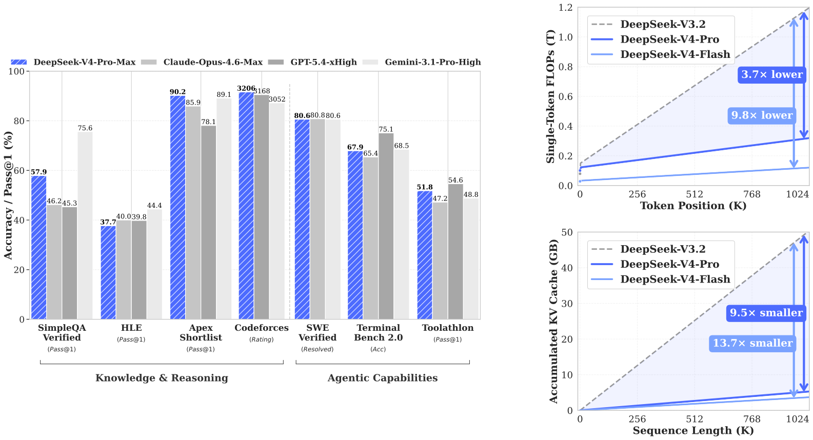
1 引言
推理模型 (OpenAI, 2024c; DeepSeek-AI, 2025a) 的出现确立了测试时扩展的新范式，推动大语言模型 (LLM) 的性能显著提升。 然而，这一扩展范式从根本上受到标准注意力机制 (Vaswani et al., 2017) 平方级计算复杂度的限制，给超长上下文和推理过程带来难以承受的瓶颈。 与此同时，从复杂智能体工作流程到海量跨文档分析，长程场景和任务的出现，也使高效支持超长上下文成为未来进展的关键。 尽管近期的开源工作 (DeepSeek-AI, 2024c; Qwen, 2025; MiniMax, 2025; Bai et al., 2025a) 已提升通用能力，但处理超长序列时这一核心架构效率问题仍是主要障碍，既限制了测试时扩展的进一步收益，也阻碍了对长程场景和任务的深入探索。
为突破超长上下文中的效率壁垒，我们开发了 DeepSeek-V4 系列，包括总参数量为 1.6T（激活 49B）的 DeepSeek-V4-Pro 预览版，以及总参数量为 284B（激活 13B）的 DeepSeek-V4-Flash 预览版。 通过架构创新，DeepSeek-V4 系列实现了处理超长序列时计算效率的巨大跃升。 这一突破使百万词元上下文长度得以高效支持，为下一代大语言模型开启了百万长度上下文的新阶段。 我们认为，高效处理超长序列的能力开辟了测试时扩展的新前沿，为更深入地研究长程任务铺平了道路，并为探索在线学习等未来范式奠定了必要基础。
与 DeepSeek-V3 架构 (DeepSeek-AI, 2024c) 相比，DeepSeek-V4 系列保留了 DeepSeekMoE 框架 (Dai et al., 2024) 和多词元预测（MTP）策略，同时在架构和优化方面引入多项关键创新。 为提升长上下文效率，我们设计了结合压缩稀疏注意力 (CSA) 与重度压缩注意力 (HCA) 的混合注意力机制。 CSA 沿序列维度压缩 KV 缓存，再执行 DeepSeek 稀疏注意力（DSA） (DeepSeek-AI, 2025b)；HCA 则对 KV 缓存进行更激进的压缩，但保留稠密注意力。 为增强建模能力，我们引入流形约束超连接 (mHC) (Xie et al., 2026)，升级传统残差连接。 此外，我们在 DeepSeek-V4 系列训练中引入 Muon (Jordan et al., 2024; Liu et al., 2025) 优化器，带来更快收敛和更好的训练稳定性。
为了让 DeepSeek-V4 系列实现高效训练、推理和开发，我们引入了多项基础设施优化。 首先，我们为 MoE 模块设计并实现了单个融合内核，将计算、通信和内存访问充分重叠。 其次，我们使用领域专用语言（DSL）TileLang (Wang et al., 2026)，兼顾开发生产力与运行时效率。 第三，我们提供高效的批次不变且确定性的内核库，确保训练和推理之间的逐比特可复现性。 第四，在训练框架方面，我们将自动微分框架扩展为支持张量级检查点，以细粒度控制重计算；同时，通过针对 Muon 优化器的混合 ZeRO 策略、利用重计算和融合内核实现的低开销 mHC，以及用于处理压缩注意力的两阶段上下文并行，提高训练效率。 第五，在推理框架方面，我们设计了结合磁盘存储策略的异构 KV 缓存结构，以高效复用共享前缀。 此外，在后训练阶段，我们对 MoE 专家权重与索引器 QK 路径引入 FP4 量化感知训练，以降低内存和计算需求。
通过混合使用 CSA 与 HCA，并优化计算和存储精度，DeepSeek-V4 系列相比 DeepSeek-V3.2 显著降低了推理 FLOPs 和 KV 缓存大小，尤其是在长上下文设置下。 图 1 右侧展示了 DeepSeek-V3.2 和 DeepSeek-V4 系列估计的单词元推理 FLOPs 与累计 KV 缓存大小。 在 1M 词元上下文场景中，即使激活参数更多的 DeepSeek-V4-Pro，其单词元 FLOPs（以等价 FP8 FLOPs 衡量）也仅为 DeepSeek-V3.2 的 27%，KV 缓存大小仅为其 10%。 此外，激活参数更少的 DeepSeek-V4-Flash 进一步提升了效率：在 1M 词元上下文设置下，其单词元 FLOPs 仅为 DeepSeek-V3.2 的 10%，KV 缓存大小仅为其 7%。 另外，DeepSeek-V4 系列的路由专家参数使用 FP4 精度。 尽管在现有硬件上，FP4 FP8 运算的峰值 FLOPs 与 FP8 FP8 相同，但理论上在未来硬件中可以实现高出 的效率，从而进一步提升 DeepSeek-V4 系列的效率。
预训练期间，我们分别用 32T 个词元训练 DeepSeek-V4-Flash，用 33T 个词元训练 DeepSeek-V4-Pro。 预训练完成后，这两个模型能够原生且高效地支持 1M 长度的上下文。 在内部评估中，DeepSeek-V4-Flash-Base 凭借参数效率更高的设计，已在大多数基准上超过 DeepSeek-V3.2-Base。 DeepSeek-V4-Pro-Base 进一步扩大这一优势，为 DeepSeek 基础模型树立了新的性能标准，在推理、编程、长上下文和世界知识任务上实现全面领先。
DeepSeek-V4 系列的后训练流程采用两阶段范式：先独立培养领域专属专家，再通过同策略蒸馏 (Lu and Lab, 2025; Gu et al., 2024) 将其整合到统一模型中。 首先，针对数学、编程、智能体、指令遵循等各个目标领域，分别独立训练一个专家模型。 基础模型先在高质量、领域专属数据上进行监督微调（SFT），建立基础能力。 随后，使用组相对策略优化（GRPO） (DeepSeek-AI, 2025a) 进行强化学习（RL），在针对具体成功标准定制的奖励模型指导下，进一步优化模型，使其行为符合领域要求。 这一阶段会产生一组多样化的专门专家，各自在所属领域表现出色。 最后，为整合这些不同的专长，我们通过同策略蒸馏训练单个统一模型；统一模型作为学生，通过优化与教师模型之间的反向 KL 损失进行学习。
核心评估结果概述
-
•
知识： 在广泛世界知识的评估中，DeepSeek-V4-Pro 的最高推理强度模式 DeepSeek-V4-Pro-Max 在 SimpleQA (OpenAI, 2024a) 和 Chinese-SimpleQA (He et al., 2024) 基准上显著超过领先开源模型。 在通过 MMLU-Pro (Wang et al., 2024b)、HLE (Phan et al., 2025) 和 GPQA (Rein et al., 2023) 评估的教育知识方面，DeepSeek-V4-Pro-Max 略微领先于开源同类模型。 尽管在这些知识类评估中仍落后于领先专有模型 Gemini-3.1-Pro，DeepSeek-V4-Pro-Max 已经显著缩小了差距。
-
•
推理： 通过扩展推理词元，DeepSeek-V4-Pro-Max 在标准推理基准上展现出优于 GPT-5.2 和 Gemini-3.0-Pro 的性能。 不过，其表现仍略逊于 GPT-5.4 和 Gemini-3.1-Pro，表明其发展进程大约落后于最先进的前沿模型 3 至 6 个月。 此外，DeepSeek-V4-Flash-Max 达到了与 GPT-5.2 和 Gemini-3.0-Pro 相当的表现，成为面向复杂推理任务的一种高性价比架构。
-
•
智能体： 在公开基准上，DeepSeek-V4-Pro-Max 与 Kimi-K2.6、GLM-5.1 等领先开源模型相当，但略逊于前沿闭源模型。 在内部评估中，DeepSeek-V4-Pro-Max 超过 Claude Sonnet 4.5，并接近 Opus 4.5 的水平。
-
•
长上下文：DeepSeek-V4-Pro-Max 在百万词元上下文窗口下的合成用例和真实用例中表现强劲，在学术基准上甚至超过 Gemini-3.1-Pro。
-
•
DeepSeek-V4-Pro 与 DeepSeek-V4-Flash 对比： 由于参数规模较小，DeepSeek-V4-Flash-Max 在知识评估中的表现较低。 然而，在分配更大思考预算后，它在推理任务中可以取得相当的结果。 在智能体评估中，虽然 DeepSeek-V4-Flash-Max 在多个基准上与 DeepSeek-V4-Pro-Max 表现相当，但在更复杂、更高难度的任务上，仍然落后于其较大版本。
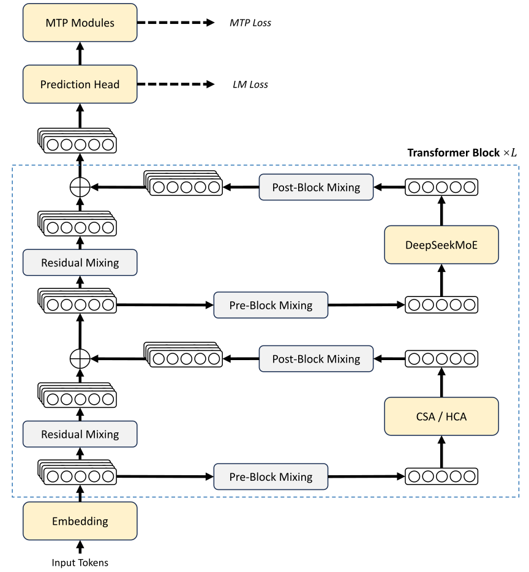
2 架构
总体而言，DeepSeek-V4 系列保留了 Transformer (Vaswani et al., 2017) 架构和多词元预测（MTP）模块 (Gloeckle et al., 2024; DeepSeek-AI, 2024c)，同时在 DeepSeek-V3 的基础上引入了几项关键升级： (1) 首先，我们引入 流形约束超连接（mHC） (Xie et al., 2026)，以增强传统残差连接； (2) 其次，我们设计了混合注意力架构，借助 压缩稀疏注意力 和 重度压缩注意力 大幅提升长上下文效率。 (3) 第三，我们采用 Muon (Jordan et al., 2024; Liu et al., 2025) 作为优化器。 对于混合专家（MoE）组件，我们仍采用 DeepSeekMoE (Dai et al., 2024) 架构，仅对 DeepSeek-V3 的设计做了少量调整。 多词元预测（MTP） (Qi et al., 2020; Gloeckle et al., 2024; Li et al., 2024; DeepSeek-AI, 2024c) 的配置与 DeepSeek-V3 完全相同。 其他未特别说明的细节均沿用 DeepSeek-V3 (DeepSeek-AI, 2024c) 的设置。 图 2 展示了 DeepSeek-V4 的整体架构，具体细节如下。
2.1 沿用 DeepSeek-V3 的设计
混合专家。
与此前的 DeepSeek 系列模型 (DeepSeek-AI, 2024b, c) 一样，DeepSeek-V4 系列的前馈网络（FFN）也采用 DeepSeekMoE 范式 (Dai et al., 2024)，设置细粒度路由专家与共享专家。 与 DeepSeek-V3 不同，我们将计算亲和分数的激活函数从 改为 。 对于负载均衡，我们同样采用无辅助损失策略 (Wang et al., 2024a; DeepSeek-AI, 2024c)，并加入轻微的序列级均衡损失，以避免单个序列内部出现极端不均衡。 在 DeepSeek-V4 中，我们取消了对路由目标节点数量的限制，并精心重新设计并行策略，以保持训练效率。 此外，相比 DeepSeek-V3，我们将最初几个 Transformer 块中的稠密 FFN 层替换为采用哈希路由的 MoE 层 (Roller et al., 2021)。 哈希路由策略通过针对输入词元 ID 预先定义的哈希函数，确定每个词元的目标专家。
多词元预测。
与 DeepSeek-V3 一样，DeepSeek-V4 系列也设置了 MTP 模块和目标。 鉴于 MTP 策略已在 DeepSeek-V3 中得到验证，我们在 DeepSeek-V4 系列中原样采用这一策略。
2.2 流形约束超连接
如图 2 所示，DeepSeek-V4 系列引入 流形约束超连接（mHC） (Xie et al., 2026)，增强相邻 Transformer 块之间的传统残差连接。 相较于朴素的超连接（HC） (Zhu et al., 2025)，mHC 的核心思想是将残差映射约束到特定流形上，从而在保留模型表达能力的同时，增强信号跨层传播的稳定性。 本小节简要介绍标准 HC，并说明我们如何设计 mHC 以实现稳定训练。
标准超连接。
标准 HC 将残差流的宽度扩展为原来的 倍。 具体而言，残差流的形状从 扩展到 ，其中 是各层实际输入的隐藏维度。 令 表示第 层之前的残差状态。 HC 引入三个线性映射：输入映射 、残差变换 和输出映射 。 残差状态的更新因此可表示为：
| (1) |
其中， 表示第 层（例如 MoE 层），其输入和输出形状均为 。 注意，各层的实际输入 仍为 维，因此扩大残差宽度不会影响内部层的设计。 HC 将残差宽度与实际隐藏维度解耦，提供了一个互补的扩展维度；由于 通常远小于隐藏维度 ，额外计算开销很小。 然而，尽管 HC 展现出提升模型性能的潜力，我们发现，当堆叠多层时，训练经常出现数值不稳定，从而阻碍 HC 的规模扩展。
流形约束残差映射。
mHC 的核心创新是将残差映射矩阵 约束到双随机矩阵流形（Birkhoff 多面体） 上，从而增强信号跨层传播的稳定性：
| (2) |
这一约束保证映射矩阵的谱范数 不超过 1，因此残差变换具有非扩张性，能够提高前向传播和反向传播过程中的数值稳定性。 此外，集合 对乘法封闭，这保证了深层堆叠 mHC 时的稳定性。 同时，输入变换 和输出变换 也通过 Sigmoid 函数被约束为非负且有界，以避免信号相互抵消的风险。
动态参数化。
三个线性映射的参数动态生成，并分解为动态分量（依赖输入）和静态分量（与输入无关）。 给定输入 ，首先将其展平并归一化：。 随后，我们沿用传统 HC，生成未经约束的原始参数 、 和 ：
| (3) | ||||
| (4) | ||||
| (5) |
其中， 和 是用于生成动态分量的可学习参数； 将大小为 的向量重塑为大小为 的矩阵； 、 和 是可学习的静态偏置； 、、 是可学习的门控因子，其初始化值较小。
施加参数约束。
获得未经约束的原始参数 后，我们对其施加前述约束，以增强数值稳定性。 具体而言，对于输入映射和输出映射，我们使用 Sigmoid 函数 保证其非负性和有界性：
| (6) | ||||
| (7) |
对于残差映射 ，我们将其投影到双随机矩阵流形 上。 这一过程通过 Sinkhorn-Knopp 算法实现：首先对 应用指数函数以保证正性，得到 ，随后迭代执行列归一化和行归一化：
| (8) |
其中， 和 分别表示行归一化和列归一化。 该迭代收敛到受约束的双随机矩阵 。 实践中，我们取 。
2.3 结合 CSA 与 HCA 的混合注意力
当上下文长度达到极大规模时，注意力机制成为模型中主要的计算瓶颈。 对于 DeepSeek-V4，我们设计了两种高效注意力架构——压缩稀疏注意力（CSA）和 重度压缩注意力（HCA），并采用二者交错的混合配置，从而显著降低长文本场景下的注意力计算成本。 CSA 结合压缩与稀疏注意力策略：首先将每 个词元的键值（KV）缓存压缩为一个条目，随后应用 DeepSeek 稀疏注意力（DSA） (DeepSeek-AI, 2025b)，使每个查询词元仅关注 个压缩后的 KV 条目。 HCA 则追求极致压缩，将每 （）个词元的 KV 缓存合并为一个条目。 CSA 与 HCA 的混合架构显著提升了 DeepSeek-V4 系列的长上下文效率，使百万词元上下文在实践中成为可能。 本小节介绍混合注意力架构的核心技术；我们还提供开源实现11 1 https://huggingface.co/deepseek-ai/DeepSeek-V4-Pro/tree/main/inference，以明确说明更多细节。
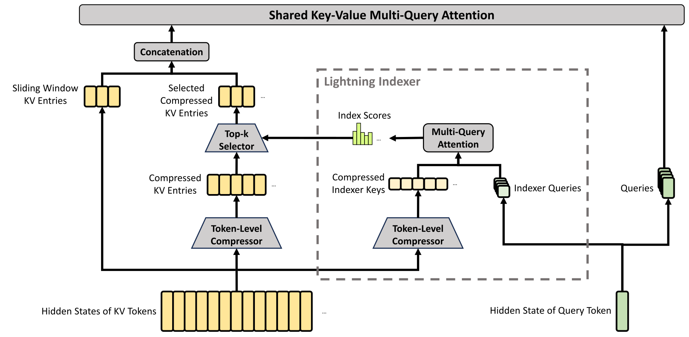
2.3.1 压缩稀疏注意力
图 3 展示了 CSA 的核心架构：首先将每 个词元的 KV 缓存压缩为一个条目，再应用 DeepSeek 稀疏注意力 进一步加速。
压缩键值条目。
令 表示输入隐藏状态序列，其中 为序列长度， 为隐藏维度。 CSA 首先计算两组 KV 条目 及其对应的压缩权重 ，其中 为注意力头维度：
| (9) | ||||
| (10) |
其中， 为可训练参数。 随后，依据压缩权重与可学习的位置偏置 ，将 和 中每 个 KV 条目压缩为一个条目，得到 。 每个压缩条目 按如下方式计算：
| (11) | ||||
| (12) |
其中， 表示 Hadamard 积； 表示沿行维度进行 softmax 运算，对来自 和 的总计 个元素进行归一化。 当 时， 用负无穷填充， 用零填充。 注意，每个 都由 个 KV 条目得到，但计算 所用的 索引与计算 所用的 索引相互重叠。 因此，CSA 实际上将序列长度压缩至原来的 。
用于稀疏选择的闪电索引器。
获得压缩 KV 条目 后，CSA 应用 DSA 策略，选择 top-k 个压缩 KV 条目用于核心注意力计算。 首先，CSA 执行与生成 相同的压缩操作，得到压缩后的索引器键 ，其中 为索引器头维度。 随后，对查询词元 ，我们以低秩方式生成索引器查询 ：
| (13) | ||||
| (14) |
其中， 是查询词元 的输入隐藏状态； 是查询的压缩潜在向量； 表示查询压缩维度； 表示索引器查询头的数量； 和 分别为索引器查询的下投影矩阵与上投影矩阵。 接着，查询词元 与前面的压缩块 （ ¡ ）之间的索引分数 按如下方式计算：
| (15) | ||||
| (16) |
其中， 为可学习矩阵； 是第 个索引器头的权重。 对于查询词元 ，给定索引分数 ，我们使用 top-k 选择器，保留压缩 KV 条目的子集 ，用于后续核心注意力计算：
| (17) |
键值共享的 MQA。
选出稀疏 KV 条目后，CSA 以多查询注意力（MQA） (Shazeer, 2019) 的方式执行核心注意力计算，其中 中的每个压缩 KV 条目同时充当注意力的键和值。 具体而言，对于查询词元 ，我们首先由压缩潜在向量 生成注意力查询 ：
| (18) |
其中， 表示查询头数量； 是查询的上投影矩阵。 注意，此处与索引器查询共享同一个潜在查询向量 。 随后，我们对 和 执行 MQA：
| (19) |
其中， 为第 个词元上第 个头的核心注意力输出； 表示核心注意力运算。
分组输出投影。
在 DeepSeek-V4 的配置中， 相当大。 因此，直接将核心注意力运算的输出 投影到 维隐藏状态，会带来很大的计算负担。 为降低这一成本，我们设计了分组输出投影策略。 具体而言，我们先将 个输出分成 组，再将每组输出 投影到 维中间输出 ，其中 。 最后，我们将中间输出 投影为最终注意力输出 。
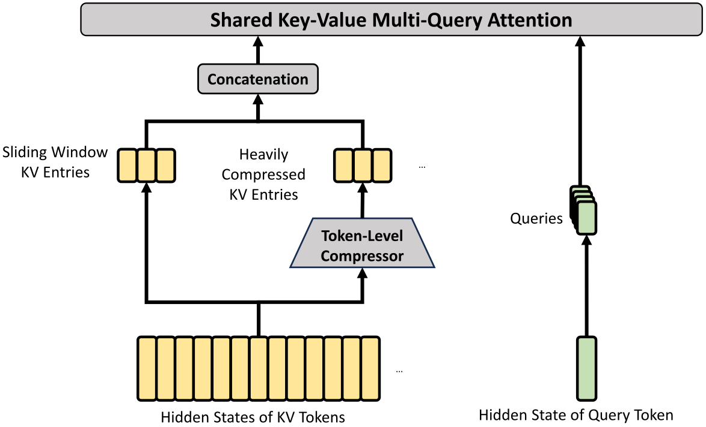
2.3.2 重度压缩注意力
图 4 展示了 HCA 的核心架构，它以更大比例压缩 KV 缓存，但不采用稀疏注意力。
压缩键值条目。
总体而言，HCA 的压缩策略与 CSA 相似，但采用更大的压缩率 （），且不执行重叠压缩。 令 表示输入隐藏状态序列，HCA 首先计算原始 KV 条目 及其对应的压缩权重 ：
| (20) | ||||
| (21) |
其中， 为可训练参数。 接着，依据压缩权重与可学习的位置偏置 ，将 中每 个 KV 条目压缩为一个，得到 。 每个压缩条目 按如下方式计算：
| (22) | ||||
| (23) |
通过这一压缩操作，HCA 将序列长度压缩至原来的 。
键值共享的 MQA 与分组输出投影。
HCA 也采用与 CSA 相同的键值共享 MQA 和分组输出投影策略。 KV 压缩完成后，对于查询词元 ，HCA 首先以低秩方式生成注意力查询 ：
| (24) | ||||
| (25) |
其中， 是查询词元 的输入隐藏状态； 表示查询头数量； 和 分别为查询的下投影矩阵与上投影矩阵。 随后，我们对 与 执行 MQA：
| (26) |
其中， 是第 个词元上第 个头的核心注意力输出。 随后，与 CSA 一样，HCA 将 个输出分为 组，并将每组输出 投影为 维中间输出 ，其中 。 最后，HCA 将中间输出 投影为最终注意力输出 。
2.3.3 其他细节
除上述 CSA 与 HCA 的核心架构外，我们的混合注意力还采用了若干其他技术。 为便于表述，前文介绍中省略了这些附加技术，本小节将对其作简要说明。 此外，本小节仅关注这些技术的核心思想，为简洁起见可能省略部分细小细节。 我们建议读者参考开源实现，以获取明确的具体细节。
查询与键值条目归一化。
对于 CSA 和 HCA，我们都在核心注意力运算之前，额外对查询的每个头和压缩 KV 条目的唯一一个头执行 RMSNorm。 这一归一化操作可以避免注意力 logits 爆炸，并可能提升训练稳定性。
部分旋转位置编码。
对于 CSA 和 HCA，我们在注意力查询、KV 条目以及核心注意力输出的部分维度上使用旋转位置编码（RoPE） (Su et al., 2024)。 具体而言，对于 CSA 和 HCA 使用的每个查询向量和 KV 条目向量，我们在其最后 64 个维度上应用 RoPE。 由于 KV 条目同时充当注意力的键和值，直接得到的核心注意力输出 会携带来自 KV 条目加权和的绝对位置编码。 为抵消这一影响，我们还在每个 的最后 64 个维度上应用位置为 的 RoPE。 这样，核心注意力的输出也会携带相对位置编码——每个 KV 条目对核心注意力输出的贡献，也与查询和该 KV 条目之间的距离有关。
附加滑动窗口注意力分支。
为严格保持 CSA 和 HCA 中的因果性，每个查询只关注前面的压缩 KV 块。 因此，查询无法访问其自身所在压缩块中其他词元的信息。 同时，在语言建模中，最近的词元通常与查询词元有更高的相关性。 基于这些原因，我们为 CSA 和 HCA 都引入了一个滑动窗口形式的补充注意力分支，以更好地建模局部依赖。 具体而言，对每个查询词元，我们额外生成 个未压缩的 KV 条目，对应最近的 个词元。 在 CSA 和 HCA 的核心注意力中，这些滑动窗口内的 KV 条目与压缩 KV 条目一起使用。
注意力汇聚。
2.3.4 效率讨论
通过混合使用 CSA 与 HCA，并结合低精度计算和存储，DeepSeek-V4 系列的注意力模块在注意力 FLOPs 和 KV 缓存大小两方面都获得了显著效率优势，尤其是在长上下文场景中。 首先，我们对 KV 条目采用混合存储格式：旋转位置编码（RoPE）维度使用 BF16 精度，其余维度使用 FP8 精度。 与纯 BF16 存储相比，这种混合表示将 KV 缓存大小减少了近一半。 其次，闪电索引器内的注意力计算使用 FP4 精度，从而加速超长上下文下的注意力运算。 第三，相比 DeepSeek-V3.2，DeepSeek-V4 系列选择了更小的注意力 top-k，因而提高了模型在短文本和中等长度文本上的效率。 最后，也是最关键的一点，压缩注意力与混合注意力技术显著减少了 KV 缓存大小与计算 FLOPs。
以头维度为 128 的 BF16 GQA8 (Ainslie et al., 2023) 为基线——这是大语言模型注意力的一种常见配置——在 1M 上下文设置下，DeepSeek-V4 系列的 KV 缓存大小可大幅降低至该基线的约 。 此外，即便与本已十分高效的基线 DeepSeek-V3.2 (DeepSeek-AI, 2025b) 相比，DeepSeek-V4 系列仍具有显著的效率优势。 图 1 右侧给出了它们的推理 FLOPs 和 KV 缓存大小对比。
2.4 Muon 优化器
由于 Muon (Jordan et al., 2024; Liu et al., 2025) 优化器具有更快的收敛速度和更好的训练稳定性，我们在 DeepSeek-V4 系列的大多数模块中采用它。 算法 1 总结了我们所用 Muon 优化的完整算法。
基本配置。
混合 Newton-Schulz 迭代。
对于给定矩阵 ，令其奇异值分解（SVD）为 。 Newton-Schulz 迭代旨在将 近似正交化为 。 通常，首先将 归一化为 ，以保证其最大奇异值不超过 1。 随后，每轮 Newton-Schulz 迭代执行以下运算：
| (28) |
我们的混合 Newton-Schulz 方案分两个不同阶段，共执行 10 次迭代。 在前 8 步中，我们使用系数 来推动快速收敛，使奇异值接近 1。 在最后 2 步中，我们切换到系数 ，使奇异值精确稳定在 1。
避免注意力 logits 爆炸。
DeepSeek-V4 系列的注意力架构允许我们直接对注意力查询和 KV 条目应用 RMSNorm，从而有效防止注意力 logits 爆炸。 因此，我们的 Muon 优化器未采用 QK-Clip 技术 (Liu et al., 2025)。
3 通用基础设施
3.1 专家并行中的细粒度通信与计算重叠
混合专家（MoE）可以通过专家并行（EP）加速。 然而，EP 需要复杂的节点间通信，并对互连带宽和延迟提出较高要求。 为缓解 EP 的通信瓶颈，并在更低的互连带宽需求下实现更高的端到端性能，我们提出一种细粒度 EP 方案，将通信与计算融合到单个流水化内核中，实现通信与计算重叠。
通信延迟可以被隐藏。
我们 EP 方案的关键洞见在于，通信延迟可以有效地由 MoE 层的计算耗时覆盖。 如Figure 5 所示，在 DeepSeek-V4 系列中，每个 MoE 层主要可以分解为四个阶段：两个受通信限制的阶段，分发（Dispatch）与合并（Combine）；以及两个受计算限制的阶段，第一线性变换（Linear-1）与第二线性变换（Linear-2）。 性能剖析表明，单个 MoE 层内的通信总耗时低于计算总耗时。 因此，将通信与计算融合为统一流水线后，计算仍是主要瓶颈，这意味着系统能够在互连带宽更低的情况下保持端到端性能不变。
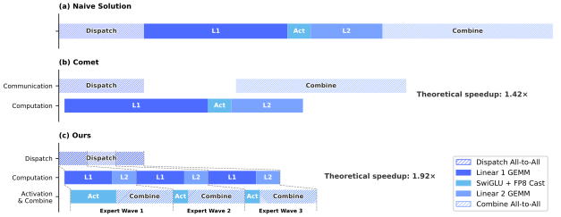
细粒度 EP 方案。
性能与开源大型融合内核。
我们在 NVIDIA GPU 与华为昇腾 NPU 两类平台上验证了该细粒度 EP 方案。 相较性能较强的非融合基线，它在通用推理工作负载上实现 加速，在 RL 轨迹生成和高速智能体服务等延迟敏感场景中最高实现 加速。 我们已将基于 CUDA、名为 MegaMoE22 2 https://github.com/deepseek-ai/DeepGEMM/pull/304 的大型融合内核实现开源，作为 DeepGEMM 的一个组件。
观察与建议。
我们分享内核开发中的观察与经验，并向硬件厂商提出一些建议，希望有助于高效硬件设计，以及更好的软硬件协同设计：
-
•
计算通信比。 完全的通信与计算重叠取决于计算通信比，而非仅取决于带宽。 设峰值计算吞吐量为 、互连带宽为 ，当 时，通信可以完全隐藏，其中 表示计算量， 表示通信量。 对于 DeepSeek-V4-Pro，每个词元—专家对需要 FLOPs（SwiGLU 的门控、上投影和下投影），但只需 字节通信量（FP8 Dispatch + BF16 Combine），因此可简化为：
即每 GBps 互连带宽足以隐藏与 6.1 TFLOP/s 计算对应的通信开销。 一旦带宽达到这一阈值，它便不再是瓶颈，将额外芯片面积用于继续提高带宽的收益会逐渐递减。 我们建议未来硬件设计以这样的平衡点为目标，而非无条件扩展带宽。
-
•
功率预算。 极致的内核融合使计算、内存和网络同时处于高负载状态，令功率限制降频成为关键性能制约因素。 我们建议未来硬件设计为此类完全并发的工作负载预留足够功率余量。
-
•
通信原语。 在分发阶段，我们采用拉取方式，由每个 GPU 主动从远端 GPU 读取激活，避免细粒度推送带来的较高通知延迟。 若未来硬件提供更低延迟的跨 GPU 信号传递，推送方式将变得可行，并能支持更自然的通信模式。
-
•
激活函数。 我们建议用不涉及指数或除法运算的低成本逐元素激活函数替换 SwiGLU。 这可以直接减少 GEMM 后处理的开销，防止 GEMM 流水线因激活函数计算而停顿，从而提高整体计算吞吐量与资源利用率。
3.2 使用 TileLang 进行灵活高效的内核开发
在实践中，我们精细设计的模型架构本会产生数百个细粒度 Torch ATen 算子。 我们采用 TileLang (Wang et al., 2026) 开发一组融合内核，替换其中绝大多数算子，以较少开发工作获得最佳性能。 它还允许我们在验证期间快速构建注意力变体等算子的原型。 这些内核在模型架构开发、大规模训练以及最终推理服务的生产部署中发挥关键作用。 作为领域专用语言（DSL），TileLang 平衡开发效率与运行时效率，既支持快速开发，也能在同一代码库内进行深入、迭代式优化。 此外，我们与 TileLang 社区密切合作，构建更敏捷、高效、稳定的内核开发流程。
通过主机代码生成减少调用开销。
随着加速器性能不断提升，CPU 侧调度开销愈发突出。对于规模较小、经过高度优化的内核，这类固定主机开销很容易限制利用率和吞吐量。一个常见来源是，运行时契约检查等主机侧逻辑通常为了灵活性而用 Python 编写，因此每次调用都会产生固定成本。
我们通过主机代码生成（Host Codegen）缓解这一开销，将大部分主机侧逻辑移入生成的主机代码。具体而言，首先在中间表示（IR）层级共同生成设备内核与轻量级主机启动器，并嵌入从语言前端解析出的必要元数据，例如数据类型、秩/形状约束以及步幅/布局假设。随后，将启动器转换为基于 TVM-FFI (Chen et al., 2018) 框架的主机源代码；该框架紧凑的调用约定和零拷贝张量互操作共同减少主机侧开销。在运行时，生成的主机代码执行验证和参数编组，将每次调用所需的检查全部移出 Python 执行路径。测量显示，CPU 侧验证开销从每次调用几十或几百微秒降至不足一微秒。
SMT 求解器辅助的形式化整数分析。
TileLang 内核涉及复杂的张量索引运算，需要强大的形式化整数分析能力。 在布局推断、内存访问冲突检测和边界分析等编译过程中，编译器必须验证整数表达式是否满足特定性质，才能启用相应优化。 因此，更强的形式化分析能力能够支持更高级、更复杂的优化机会。
为此，我们将 Z3 SMT 求解器 (De Moura and Bjørner, 2008) 整合到 TileLang 的代数系统，为张量程序中的大多数整数表达式提供形式化分析能力。 通过将 TileLang 整数表达式转化为 Z3 的无量词非线性整数算术（QF_NIA），我们在计算开销与形式化表达能力之间取得平衡。 基于整数线性规划（ILP）求解器，QF_NIA 可以顺畅求解内核中常见的标准线性整数表达式。 此外，其内在的非线性推理能力能有效应对可变张量形状下向量化等高级难题。 在合理资源限制下，Z3 提升整体优化性能，同时将编译时间开销限制在数秒以内。 它对向量化、屏障插入及代码简化等多个编译过程都具有显著作用。
数值精度与逐比特可复现性。
在生产环境中，数值正确性与可复现性和原始吞吐量同样重要。 因此，我们默认优先保证精度：在编译器层面禁用 fast-math 优化，仅通过需要显式选择启用的前端算子提供影响精度的近似运算，例如 T.__exp、T.__log 和 T.__sin。 反之，当需要严格的 IEEE-754 语义时，TileLang 提供符合 IEEE 标准、具有显式舍入模式的内建函数，例如 T.ieee_fsqrt、T.ieee_fdiv 和 T.ieee_add，让开发者精确指定数值行为。
我们还以逐比特可复现性为目标，用于对照手写 CUDA 基线验证内核。 我们使 TileLang 的代数化简与底层代码生成规则对齐主流 CUDA 工具链，例如 NVCC，以避免引入非预期比特级差异的变换。 布局注解（如 T.annotate_layout）进一步允许用户固定依赖布局的底层代码生成决策，使求值与累积顺序和参考 CUDA 实现保持一致，从而在需要时得到逐比特完全相同的输出。
评估显示，这些面向精度与可复现性的设计选择并不牺牲性能：即便采用保守默认设置，TileLang 内核仍具有竞争力，同时还提供控制选项，允许有选择地放宽数值约束以获得更高速度。
3.3 高性能、批次不变且确定性的内核库
为支持高效训练与推理，我们开发了一套完备的高性能计算内核。 除了实现基本功能和最大化硬件利用率外，另一个关键设计目标是保证训练可复现性，以及预训练、后训练与推理流水线之间的逐比特对齐。 因此，我们以最小性能开销实现端到端、逐比特批次不变且确定性的内核。 这些内核有助于调试、稳定性分析，以及一致的后训练行为。
批次不变性。
批次不变性保证，无论某个给定词元位于批次中的哪个位置，其输出都逐比特完全一致。 实现批次不变性面临的主要挑战如下：
-
•
注意力。 为实现批次不变性，我们不能使用 split-KV 方法 (Dao et al., 2023)；该方法将单个序列的注意力计算分配到多个流式多处理器（SM），以平衡 SM 负载。 然而，放弃这一技术会造成严重的波次量化问题33 3 https://docs.nvidia.com/deeplearning/performance/dl-performance-matrix-multiplication/index.html#wave-quant，进而影响 GPU 利用率。 为解决这一问题，我们为批次不变解码开发双内核策略。 第一个内核在单个 SM 内计算整个序列的注意力输出，以确保完全占满的波次具有高吞吐量。 第二个内核为单个序列使用多个 SM，以尽量降低最后一个未完全占满波次的延迟，从而缓解波次量化。 为使两个内核逐比特一致，我们精心设计第二个内核的计算路径，确保其累积顺序与第一个内核相同。 此外，第二个内核利用线程块集群内部的分布式共享内存44 4 https://docs.nvidia.com/cuda/cuda-programming-guide/02-basics/writing-cuda-kernels.html#distributed-shared-memory，实现跨 SM 的高速数据交换。 这一双内核方法有效地将批次不变解码的开销限制到可忽略的程度。
-
•
矩阵乘法。 传统 cuBLAS 库 (NVIDIA Corporation, 2024) 无法实现批次不变性。 因此，我们在端到端流程中使用 DeepGEMM (Zhao et al., 2025) 替换它。 此外，对于极小批次，传统实现通常采用 split-k (Osama et al., 2023) 技术来提高性能。 遗憾的是，split-k 技术无法保证批次不变性，而这正是 DeepSeek-V4 的关键特性。 因此，我们在大多数场景中放弃 split-k，但这可能导致性能下降。 为应对这一问题，我们引入一组优化，使矩阵乘法实现在大多数主要场景中达到甚至超过标准 split-k 的性能。
确定性。
确定性训练非常有助于调试硬件或软件问题。 此外，当训练出现损失尖峰等异常时，确定性使研究者更容易定位数值原因，并进一步改进模型设计。 训练中的非确定性通常源于不确定的累积顺序，而这又往往由原子加法指令的使用导致。 这一问题主要发生在反向传播阶段，尤其包括以下部分：
-
•
注意力反向传播。 在传统稀疏注意力反向传播实现中，我们使用 atomicAdd 累积 KV 词元的梯度。 由于浮点加法不满足结合律，这会引入非确定性。 为解决此问题，我们为每个 SM 分配独立的累积缓冲区，随后对所有缓冲区进行全局确定性求和。
-
•
MoE 反向传播。 当来自不同进程的多个 SM 同时向接收进程的同一缓冲区写入数据时，写入位置的协调也会引入非确定性。 为解决此问题，我们在每个进程内部设计词元顺序预处理机制，并在不同进程之间隔离缓冲区。 该策略保证专家并行发送结果与 MoE 反向传播累积顺序都具有确定性。
-
•
mHC 中的矩阵乘法。 mHC 涉及输出维度仅为 24 的矩阵乘法。 对于极小批次，我们不得不使用 split-k (Osama et al., 2023) 算法，而其朴素实现会产生非确定性。 为解决此问题，我们单独输出每个切分部分，并在后续内核中进行确定性归约，从而同时保留性能与确定性。
3.4 训练框架
我们的训练框架建立在为 DeepSeek-V3 (DeepSeek-AI, 2024c) 开发的可扩展、高效基础设施之上。 训练 DeepSeek-V4 时，我们继承这一稳健基础，同时引入若干关键创新，以适应其新的架构组件，具体包括 Muon 优化器、mHC 和混合注意力机制，并保持较高训练效率与稳定性。
3.4.1 Muon 的高效实现
Muon 优化器需要完整梯度矩阵来计算参数更新，因此与零冗余优化器（ZeRO） (Rajbhandari et al., 2020) 结合时会面临挑战。 传统 ZeRO 面向 AdamW 这类逐元素优化器设计，单个参数矩阵可以划分到多个进程并分别更新。 为解决这一冲突，我们为 Muon 设计了混合式 ZeRO 桶分配策略。
对于稠密参数，我们限制 ZeRO 并行度的最大值，并采用背包算法将参数矩阵分配到这些进程，使每个进程的负载大致均衡。 每个进程上的桶都填充到所有进程中最大桶的大小，以便高效执行 reduce-scatter 操作。 在我们的配置中，每个进程管理不超过五个参数矩阵，这种填充通常带来不足 10% 的内存开销。 当数据并行总规模超过 ZeRO 的限制时，我们在额外的数据并行组中冗余计算 Muon 更新，以增加计算换取桶内存总量的减少。
对于 MoE 参数，我们独立优化每个专家。 首先将所有层、所有专家的 SwiGLU (Shazeer, 2020) 下投影矩阵展平，随后依次拼接展平的上投影矩阵与门控矩阵。 接着对展平向量进行填充，以便将该向量均匀分配到所有进程，同时不切分任何逻辑上独立的矩阵。 鉴于专家数目众多，我们不对 MoE 参数的 ZeRO 并行度设限，填充开销也可以忽略不计。
此外，每个进程中形状相同且连续排列的参数会被自动合并，从而能够批量执行 Newton-Schulz 迭代，提高硬件利用率。 进一步地，我们观察到，Muon 中的 Newton-Schulz 迭代使用 BF16 矩阵乘法计算时仍保持稳定。 基于这一点，我们进一步采用随机舍入，将数据并行进程之间需要同步的 MoE 梯度量化到 BF16 精度，使通信量减半。 为避免低精度加法器引入累积误差，我们用两阶段方案替换传统的树式或环式 reduce-scatter 集合通信。 首先，通过 all-to-all 操作在进程之间交换本地梯度，随后各进程使用 FP32 进行本地求和。这一设计维持了数值稳健性。
3.4.2 mHC 的低成本与内存高效实现
相较传统残差连接，引入 mHC 同时增加了激活内存占用和流水线阶段之间的通信量。 为减轻这些成本，我们实施了多项优化策略。
首先，我们为训练与推理精心设计并实现了 mHC 融合内核。 其次，我们引入选择性保存中间张量的重计算策略。 具体而言，我们重计算层间大部分隐藏状态和所有归一化后的层输入，同时避免重计算开销较大的操作。 这在节省内存与计算开销之间取得平衡。 第三，我们调整 DualPipe 1F1B 重叠方案，以适应增加的流水线通信，并支持 mHC 中部分操作并发执行。
综合这些优化，mHC 的实际耗时开销被限制为重叠执行的 1F1B 流水线阶段耗时的 6.7%。 更多工程优化细节可参阅专门介绍 mHC 的论文 (Xie et al., 2026)。
3.4.3 长上下文注意力的上下文并行
传统上下文并行（CP）划分序列维度，每个进程维护连续的 个词元。 这为我们的压缩注意力机制，即 CSA 与 HCA，带来两个挑战。 一方面，训练样本由多个序列打包而成，每个序列独立按因子 （或 ）压缩，不足 个词元的尾部会被丢弃。 因此，压缩后的 KV 长度通常小于 ，且在进程之间不同。 另一方面，压缩需要 个连续 KV 条目，这些条目可能横跨相邻两个 CP 进程的边界。
为应对这些挑战，我们设计了两阶段通信方案。 第一阶段，每个进程 将最后 个未压缩 KV 条目发送给进程 。 随后，进程 将收到的部分条目与本地 个未压缩 KV 条目一同压缩，生成固定长度为 的压缩条目，其中包含一些填充条目。 第二阶段，通过覆盖所有 CP 进程的 all-gather 操作收集本地压缩 KV 条目。 随后，一个融合的选择与填充算子将其重新组织为完整压缩 KV 条目集合，总长度为 。 所有填充条目均置于尾部。 对于 HCA 以及 CSA 中的索引器，每个查询词元可见的压缩 KV 条目范围可以按规则预先计算。 对于 CSA 中的稀疏注意力，top- 选择器会显式指定每个查询可见的压缩 KV 条目索引。
3.4.4 支持灵活激活检查点的扩展自动微分
传统激活检查点实现以整个模块为粒度，决定在反向传播期间保留还是重计算其输出激活。 这一粗粒度往往无法在重计算成本与激活内存占用之间获得最优权衡。 另一种方法是手工实现整个层的前向与反向逻辑，显式管理张量的检查点状态。 这种方法虽然支持细粒度控制，却失去了自动微分框架的便利性，显著增加开发复杂度。
为在不牺牲编程效率的前提下实现细粒度控制，我们实现了支持自动微分的张量级激活检查点机制。 使用这一机制时，开发者只需实现前向传播，并有选择地标注各个张量，即可自动完成检查点保存与重计算。 框架利用 TorchFX (Reed et al., 2022) 追踪完整计算图。 对于每个被标注的张量，框架执行反向遍历，以识别其重计算所需的最小子图。 我们将这些最小子图定义为重计算图，并将其插入反向逻辑中相应梯度计算之前。
相较手工实现，这一设计在训练期间不引入额外开销。 框架中的重计算通过直接释放被标注张量的 GPU 内存，并复用重计算张量的存储指针来实现，不涉及任何 GPU 内存拷贝。 此外，由于图追踪会实际执行模型，我们能够跟踪每个张量的底层存储指针，从而对共享存储的张量自动去除重复重计算，例如 reshape 操作的输入与输出。 这使开发者在标注重计算时，无须考虑底层内存细节。
3.5 推理框架
我们的推理框架主要继承自 DeepSeek-V3，在 KV 缓存管理方面有所不同。
3.5.1 KV 缓存结构与管理
为高效管理 DeepSeek-V4 混合注意力机制产生的异构 KV 缓存，我们设计了定制 KV 缓存布局。 该布局如图 6 所示，下文将详细说明。
DeepSeek-V4 中的异构 KV 条目。
DeepSeek-V4 系列的混合注意力机制引入了多种 KV 条目，它们的键值（KV）缓存大小与更新规则各不相同。 用于稀疏选择的闪电索引器为 KV 缓存引入额外维度，其嵌入大小不同于主注意力。 CSA 和 HCA 所采用的压缩技术分别将序列长度缩减为原来的 和 ，从而减少整体 KV 缓存大小。 因此，不同层的 KV 缓存大小并不相同。 此外，滑动窗口注意力（SWA）层还采用不同的 KV 缓存大小，以及独立的缓存命中与淘汰策略。 在压缩分支中，每 个词元生成一个 KV 条目。 当剩余词元数不足以压缩时，所有待处理词元及其相关隐藏状态都必须保留在缓冲区中，直到能够执行压缩操作。 这些缓冲词元表示由位置上下文决定的序列状态，也在 KV 缓存框架中统一管理。
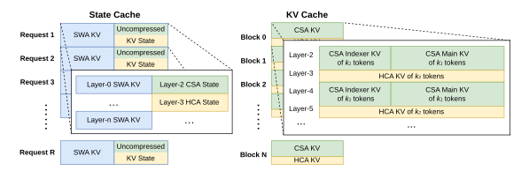
混合注意力 KV 缓存的管理挑战。
SWA 与未压缩尾部词元的状态缓存。
为解决第一个障碍，我们采用另一种缓存管理机制。 由于 SWA 旨在有限 KV 缓存大小下增强性能，将它与压缩分支中的未压缩尾部词元一起视为状态空间模型是合理的。 相应 KV 缓存因而可视为仅依赖当前位置的特定序列状态。 据此，我们预先分配一个大小固定且有限的状态缓存池，并将其动态分配给各序列。
稀疏注意力内核协同设计。
对于第二个障碍，传统高性能注意力内核通常假定每块包含固定数量 的词元，以优化性能，这在 CSA 中对应 个原始词元，在 HCA 中对应 个原始词元。 通过采用高性能稀疏注意力内核，不同层可以容纳每块不同数量的词元，而不降低性能。 实现这一点需要协同设计 KV 缓存布局与稀疏注意力内核。 例如，通过填充使块与缓存行对齐，可以提高性能。 因此，对于压缩率为 的 CSA 和压缩率为 的 HCA，每块原始词元数可以是 的任意倍数，这里的函数表示两个压缩率的最小公倍数。
3.5.2 磁盘 KV 缓存存储
在提供 DeepSeek-V4 推理服务时，我们采用磁盘 KV 缓存存储机制，避免对共享前缀的请求重复进行预填充。 对于 CSA/HCA 中压缩后的 KV 条目，以及滑动窗口注意力（SWA）中未压缩的 KV 条目，我们分别设计了存储管理方案。
对于 CSA 与 HCA，我们直接将所有压缩 KV 条目存储到磁盘。 当请求命中已存储前缀时，读取并复用该前缀对应的压缩 KV 条目，直至最后一个完整压缩块。 特别地，对于尾部不完整块中的前缀词元，我们仍需重计算以恢复未压缩 KV 条目，因为 CSA 与 HCA 中的未压缩 KV 条目并未存储。
SWA KV 条目未经压缩，且存在于每一层，因此其体积约为压缩后的 CSA 与 HCA KV 条目的 8 倍。 为高效处理这些较大的 SWA KV 条目，我们提出并实现了三种不同的磁盘 SWA KV 条目管理策略，它们各自在存储开销与冗余计算之间提供不同权衡：
-
•
完整 SWA 缓存。 该策略存储所有词元的完整 SWA KV 条目，确保没有冗余计算。 在这一策略下，只需读取命中前缀最后 个词元的磁盘缓存，即可重建该前缀的 SWA KV 条目。 尽管没有冗余计算，这一策略对现代基于 SSD 的存储系统并不高效：每个命中请求仅访问已存储 SWA KV 缓存的一小部分，导致不均衡的写密集型访问模式。
-
•
周期性检查点。 该策略为最近 个词元的 SWA KV 条目保存检查点，保存间隔为 个词元，其中 为可调参数。 对于命中前缀，我们加载最近保存的检查点状态，再重计算剩余尾部词元。 通过调节 ，这一策略可以按需权衡存储与计算。
-
•
零 SWA 缓存。 该策略不存储任何 SWA KV 条目。 对于命中前缀，需要执行更多重计算来恢复 SWA KV 条目。 具体而言，在每个注意力层中，每个词元的 SWA KV 条目只依赖上一层最近 个词元的 SWA KV 条目。 因此，利用已缓存的 CSA 和 HCA KV 条目，只需重计算最后 个词元，即可恢复最后 个 SWA KV 条目，适用于一个 层模型。
我们根据具体部署场景选择最合适的策略，以实现所需的存储与计算权衡。
4 预训练
4.1 数据构建
在 DeepSeek-V3 预训练数据的基础上，我们致力于构建更多样、质量更高且有效上下文更长的训练语料。 我们持续改进数据构建流程。 对于来源于网页的数据，我们采用过滤策略，去除批量自动生成和模板化的内容，从而降低模型坍塌的风险 (Zhu et al., 2024)。 数学和编程语料仍是训练数据的核心组成部分；我们还在中期训练阶段加入智能体数据，以进一步增强 DeepSeek-V4 系列的编程能力。 对于多语言数据，我们为 DeepSeek-V4 构建了更大规模的语料，提高其获取不同文化中长尾知识的能力。 对于 DeepSeek-V4，我们尤其重视长文档数据的筛选整理，优先纳入科学论文、技术报告以及其他具有独特学术价值的材料。 综合以上数据，我们的预训练语料包含超过 32T 个词元，涵盖数学内容、代码、网页、长文档以及其他高质量类别。
4.2 预训练设置
4.2.1 模型设置
DeepSeek-V4-Flash.
我们将 Transformer 层数设为 43，隐藏维度 设为 4096。 前两层使用纯滑动窗口注意力。 后续各层交错使用 CSA 和 HCA。 对于 CSA，我们将压缩率 设为 4，索引器查询头数量 设为 64，索引器头维度 设为 128，稀疏注意力选择的 KV 条目数量（即注意力 top-k）设为 512。 对于 HCA，我们将压缩率 设为 128。 对于 CSA 和 HCA，我们均将查询头数量 设为 64，头维度 设为 512，查询压缩维度 设为 1024。 输出投影分组数 设为 8，每个中间注意力输出的维度 设为 1024。 对于附加的滑动窗口注意力分支，窗口大小 设为 128。 我们在全部 Transformer 块中使用 MoE 层，其中前 3 个 MoE 层采用哈希路由策略。 每个 MoE 层包含 1 个共享专家和 256 个路由专家，每个专家的中间隐藏维度为 2048。 对于每个词元，路由专家中会有 6 个被激活。 多词元预测深度设为 1。 对于 mHC，扩展因子 设为 4，Sinkhorn-Knopp 迭代次数 设为 20。 在这一配置下，DeepSeek-V4-Flash 的总参数量为 284B，每个词元激活其中的 13B。
DeepSeek-V4-Pro.
我们将 Transformer 层数设为 61，隐藏维度 设为 7168。 前两层使用 HCA。 后续各层交错使用 CSA 和 HCA。 对于 CSA，我们将压缩率 设为 4，索引器查询头数量 设为 64，索引器头维度 设为 128，稀疏注意力选择的 KV 条目数量（即注意力 top-k）设为 1024。 对于 HCA，我们将压缩率 设为 128。 对于 CSA 和 HCA，我们均将查询头数量 设为 128，头维度 设为 512，查询压缩维度 设为 1536。 输出投影分组数 设为 16，每个中间注意力输出的维度 设为 1024。 对于附加的滑动窗口注意力分支，窗口大小 设为 128。 我们在全部 Transformer 块中使用 MoE 层，其中前 3 个 MoE 层采用哈希路由策略。 每个 MoE 层包含 1 个共享专家和 384 个路由专家，每个专家的中间隐藏维度为 3072。 对于每个词元，路由专家中会有 6 个被激活。 多词元预测深度设为 1。 对于 mHC，扩展因子 设为 4，Sinkhorn-Knopp 迭代次数 设为 20。 在这一配置下，DeepSeek-V4-Pro 的总参数量为 1.6T，每个词元激活其中的 49B。
4.2.2 训练设置
DeepSeek-V4-Flash.
我们对大多数参数采用 Muon 优化器 (Jordan et al., 2024; Liu et al., 2025)，对嵌入模块、预测头模块以及所有 RMSNorm 模块的权重使用 AdamW 优化器 (Loshchilov and Hutter, 2017)。 对于 AdamW，我们将超参数设为 、、 和 。 对于 Muon，我们将动量设为 0.95、权重衰减设为 0.1，并将每个更新矩阵的 RMS 重新缩放至 0.18，以复用 AdamW 的学习率。 我们使用 32T 个词元训练 DeepSeek-V4-Flash，并与 DeepSeek-V3 一样采用批次大小调度策略：将批次大小（按词元计）从较小值增至 75.5M，然后在大部分训练期间保持为 75.5M。 学习率在最初 2000 步线性预热，并在大部分训练期间保持为 。 接近训练结束时，我们最终按余弦调度将学习率衰减至 。 训练从 4K 序列长度开始，随后逐步扩展至 16K、64K 和 1M。 对于稀疏注意力的设置，我们首先在前 1T 个词元上采用稠密注意力对模型预热，在序列长度达到 64K 时引入稀疏注意力，并在余下训练中一直保持稀疏注意力。 引入注意力稀疏性时，我们先设置一个短阶段来预热 CSA 中的闪电索引器，随后在大部分训练期间使用稀疏注意力训练模型。 对于无辅助损失负载均衡，我们将偏置更新速度设为 0.001。 对于均衡损失，我们将其损失权重设为 0.0001，以避免单个序列内部出现极端不均衡。 MTP 损失权重在大部分训练期间设为 0.3，并在学习率开始衰减时设为 0.1。
DeepSeek-V4-Pro.
除超参数的具体取值外，DeepSeek-V4-Pro 的训练设置与 DeepSeek-V4-Flash 基本一致。 我们对大多数参数采用 Muon 优化器，对嵌入模块、预测头模块以及所有 RMSNorm 模块的权重使用 AdamW 优化器。 AdamW 和 Muon 的超参数与 DeepSeek-V4-Flash 相同。 我们使用 33T 个词元训练 DeepSeek-V4-Pro，并同样采用批次大小调度策略，最大批次大小为 94.4M 个词元。 学习率调度策略与 DeepSeek-V4-Flash 基本相同，但峰值学习率设为 ，最终学习率设为 。 训练同样从 4K 序列长度开始，并逐步扩展至 16K、64K 和 1M。 相较于 DeepSeek-V4-Flash，DeepSeek-V4-Pro 开始时的稠密注意力阶段更长；其引入稀疏注意力的策略则与 DeepSeek-V4-Flash 相同，均采用两阶段训练方法。 对于无辅助损失负载均衡，我们将偏置更新速度设为 0.001。 对于均衡损失，我们将其损失权重设为 0.0001，以避免单个序列内部出现极端不均衡。 MTP 损失权重在大部分训练期间设为 0.3，并在学习率开始衰减时设为 0.1。
4.2.3 缓解训练不稳定性
训练万亿参数 MoE 模型面临显著的稳定性挑战，DeepSeek-V4 系列也不例外。 训练过程中，我们遇到了明显的不稳定性问题。 虽然简单回滚能够暂时恢复训练状态，但它无法避免损失尖峰再次发生，因此不足以作为长期解决方案。 经验上，我们发现尖峰的出现始终与 MoE 层中的异常值有关，而路由机制本身似乎又会加剧这些异常值的产生。 因此，我们尝试从两个维度解决这一问题：打破路由导致的恶性循环，以及直接抑制异常值。 幸运的是，我们发现了两项能够有效保持训练稳定性的实用技术。 目前，对其底层机理的全面理论理解仍是开放问题；但我们选择公开分享这些技术，以促进社区进一步探索。
预先路由。
我们发现，将骨干网络与路由网络的同步更新解耦，能够显著提高训练稳定性。 因此，在步骤 ，我们用当前网络参数 进行特征计算，但路由索引使用历史网络参数 计算并应用。 实践中，为避免两次加载模型参数的开销，我们在步骤 就提前获取步骤 所需的数据。 我们“预先”计算并缓存稍后在步骤 使用的路由索引，因此将这一方法命名为预先路由。 我们还在基础设施层面对它进行了大量优化。 首先，由于预计算路由索引只需对数据进行一次前向传播，我们精心编排流水线执行以及计算与专家并行（EP）通信的重叠，成功将预先路由增加的实际耗时控制在约 20%。 其次，我们引入自动检测机制：仅在出现损失尖峰时，才触发短暂回滚并启用预先路由；在这一模式下运行一段时间后，系统恢复常规训练。 最终，这种动态应用方式能够在不损害模型性能的前提下避免损失尖峰，而整体额外训练开销可忽略不计。
SwiGLU 截断。
4.3 评估
4.3.1 评估基准
对于基础模型的评估，我们考虑覆盖四个关键维度的基准：世界知识、语言理解与推理、编程与数学，以及长上下文处理。
世界知识基准包括 AGIEval (Zhong et al., 2023), C-Eval (Huang et al., 2023), CMMLU (Li et al., 2023) MMLU (Hendrycks et al., 2020), MMLU-Redux (Gema et al., 2024), MMLU-Pro (Wang et al., 2024b), MMMLU (OpenAI, 2024d), MultiLoKo (Hupkes and Bogoychev, 2025), Simple-QA verified (Haas et al., 2025), SuperGPQA (Du et al., 2025), FACTS Parametric (Cheng et al., 2025), 以及 TriviaQA (Joshi et al., 2017)。
语言理解与推理基准包括 BigBench Hard (BBH) (Suzgun et al., 2022), DROP (Dua et al., 2019), HellaSwag (Zellers et al., 2019)、CLUEWSC (Xu et al., 2020) 和 WinoGrande (Sakaguchi et al., 2019)。
编程与数学基准包括 BigCodeBench (Zhuo et al., 2025)、HumanEval (Chen et al., 2021)、GSM8K (Cobbe et al., 2021)、MATH (Hendrycks et al., 2021)、MGSM (Shi et al., 2023) 和 CMath (Wei et al., 2023)。
长上下文基准包括 LongBench-V2 (Bai et al., 2025b)。
| 基准 （指标） | # 示例 | DeepSeek-V3.2 | DeepSeek-V4-Flash | DeepSeek-V4-Pro | |
|---|---|---|---|---|---|
| Base | Base | Base | |||
| 架构 | - | MoE | MoE | MoE | |
| # 激活参数 | - | 37B | 13B | 49B | |
| # 总参数 | - | 671B | 284B | 1.6T | |
| 世界知识 | AGIEval (EM) | 0-shot | 80.1 | 82.6 | 83.1 |
| MMLU (EM) | 5-shot | 87.8 | 88.7 | 90.1 | |
| MMLU-Redux (EM) | 5-shot | 87.5 | 89.4 | 90.8 | |
| MMLU-Pro (EM) | 5-shot | 65.5 | 68.3 | 73.5 | |
| MMMLU (EM) | 5-shot | 87.9 | 88.8 | 90.3 | |
| C-Eval (EM) | 5-shot | 90.4 | 92.1 | 93.1 | |
| CMMLU (EM) | 5-shot | 88.9 | 90.4 | 90.8 | |
| MultiLoKo (EM) | 5-shot | 38.7 | 42.2 | 51.1 | |
| Simple-QA verified (EM) | 25-shot | 28.3 | 30.1 | 55.2 | |
| SuperGPQA (EM) | 5-shot | 45.0 | 46.5 | 53.9 | |
| FACTS Parametric (EM) | 25-shot | 27.1 | 33.9 | 62.6 | |
| TriviaQA (EM) | 5-shot | 83.3 | 82.8 | 85.6 | |
| 语言与推理 | BBH (EM) | 3-shot | 87.6 | 86.9 | 87.5 |
| DROP (F1) | 1-shot | 88.2 | 88.6 | 88.7 | |
| HellaSwag (EM) | 0-shot | 86.4 | 85.7 | 88.0 | |
| WinoGrande (EM) | 0-shot | 78.9 | 79.5 | 81.5 | |
| CLUEWSC (EM) | 5-shot | 83.5 | 82.2 | 85.2 | |
| 编程与数学 | BigCodeBench (Pass@1) | 3-shot | 63.9 | 56.8 | 59.2 |
| HumanEval (Pass@1) | 0-shot | 62.8 | 69.5 | 76.8 | |
| GSM8K (EM) | 8-shot | 91.1 | 90.8 | 92.6 | |
| MATH (EM) | 4-shot | 60.5 | 57.4 | 64.5 | |
| MGSM (EM) | 8-shot | 81.3 | 85.7 | 84.4 | |
| CMath (EM) | 3-shot | 92.6 | 93.6 | 90.9 | |
| 长上下文 | LongBench-V2 (EM) | 1-shot | 40.2 | 44.7 | 51.5 |
4.3.2 评估结果
表 1 详细比较了 DeepSeek-V3.2、DeepSeek-V4-Flash 和 DeepSeek-V4-Pro 的基础模型；所有模型均在统一的内部框架下，以严格一致的设置进行评估。
DeepSeek-V4-Flash-Base 与 DeepSeek-V3.2-Base 的比较体现了显著的效率优势。 尽管激活参数量与总参数量都明显更小，DeepSeek-V4-Flash-Base 在众多基准上仍优于 DeepSeek-V3.2-Base。 这一优势在世界知识任务与具有挑战性的长上下文场景中尤为明显。 这些结果说明，即便参数预算更紧凑，DeepSeek-V4-Flash-Base 的架构改进、数据质量提升和训练优化仍能带来更优性能，使其在大多数评估中超越规模更大的 DeepSeek-V3.2-Base。
此外，DeepSeek-V4-Pro-Base 的能力进一步实现了显著跃升，几乎全面领先于 DeepSeek-V3.2-Base 和 DeepSeek-V4-Flash-Base。 DeepSeek-V4-Pro-Base 在几乎所有类别中均有所提升，并在最具挑战性的基准上刷新了 DeepSeek 基础模型的性能纪录。 在知识密集型评估中，它取得了大幅提升，同时也显著增强了长上下文理解能力。 在多数推理和编程基准上，DeepSeek-V4-Pro-Base 也超越了前两个模型。 这种全面提升确立了 DeepSeek-V4-Pro-Base 作为 DeepSeek 系列最强基础模型的地位，其知识、推理、编程和长上下文能力均超越此前模型。
5 后训练
5.1 后训练流程
预训练完成后，我们开展后训练，得到 DeepSeek-V4 系列的最终模型。 虽然训练流程大体沿用 DeepSeek-V3.2，但我们在方法上做了一项关键替换：将混合强化学习（RL）阶段完全替换为同策略蒸馏（OPD；Lu and Lab, 2025; Gu et al., 2024）。
5.1.1 领域专家训练
我们通过调整 DeepSeek-V3.2 的训练流程来训练领域专家。 具体而言，每个模型先经历初始微调阶段，再通过由领域特定提示和奖励信号引导的强化学习（RL）进行优化。 在 RL 阶段，我们采用组相对策略优化（GRPO）算法，超参数与此前研究 (DeepSeek-AI, 2025a, b) 保持基本一致。
推理强度。
普遍认为，模型在推理任务上的性能从根本上受投入计算量的制约。 因此，我们采用不同的 RL 配置训练不同的专家模型，以形成针对不同推理能力需求优化的模型。 如表 2 所示，DeepSeek-V4-Pro 与 DeepSeek-V4-Flash 均支持三种具体的推理强度模式。 对于每种模式，我们在 RL 训练中采用不同的长度惩罚和上下文窗口，从而使推理输出的词元长度有所不同。 为整合这些不同的推理模式，我们使用由 <think> 和 </think> 词元界定的专门响应格式。 此外，对于“Think Max”模式，我们在系统提示的开头加入一条特定指令，以引导模型的推理过程，如表 3 所示。
| 推理模式 | 特征 | 典型使用场景 | 响应格式 |
|---|---|---|---|
| Non-think | 基于习惯或简单规则给出快速、直觉式响应。 | 日常例行任务、紧急反应、低风险决策。 | </think> 摘要 |
| Think High | 有意识的逻辑分析，速度较慢但更准确。 | 复杂问题求解、规划、中等风险决策。 | <think> 思考词元 </think> 摘要 |
| Think Max | 将推理发挥到最大程度。速度慢但能力强。 | 探索模型推理能力的边界。 |
1. 在开头加入特殊系统提示。
2. <think> 思考词元 </think> 摘要 |
注入的指令
推理强度：绝对最高，不允许采取捷径。
你必须进行非常彻底的思考，全面分解问题以解决根本原因，并针对所有可能路径、边界情形和对抗场景严格检验你的逻辑。
明确写出完整的思考过程，记录每个中间步骤、考虑过的替代方案以及被否定的假设，确保绝不遗漏任何未经检查的假设。
生成式奖励模型。
通常，易于验证的任务可通过简单的基于规则的验证器或测试用例来有效优化。 相比之下，难以验证的任务通常依赖基于人类反馈的强化学习（RLHF），需要大量人工标注来训练标量奖励模型。 然而，在 DeepSeek-V4 系列的后训练阶段，我们不再使用这些传统的标量奖励模型。 对于难以验证的任务，我们改为整理由评分细则引导的 RL 数据，并采用生成式奖励模型（GRM）评估策略轨迹。 关键在于，我们也直接对 GRM 本身进行 RL 优化。 在这一范式中，策略网络（actor）本身就充当 GRM，从而将模型的评估（判断）能力与常规生成能力联合优化。 通过统一这两种角色，模型内在的推理能力自然融入评估过程，从而产生高度稳健的评分。 此外，由于模型利用自身逻辑在复杂任务间泛化，这一方法只需极少量、具有多样性的人工标注即可获得更优性能。
工具调用模式
工具调用模式与特殊词元。
与此前版本一致，我们使用专门的 ¡think¿¡/think¿ 标签来界定推理路径。 在 DeepSeek-V4 系列中，我们引入新的工具调用模式，采用特殊的“—DSML—”词元，并使用基于 XML 的格式进行工具调用，如表 4 所示。 实验表明，XML 格式能够有效缓解转义失败并减少工具调用错误，为模型与工具的交互提供更稳健的接口。
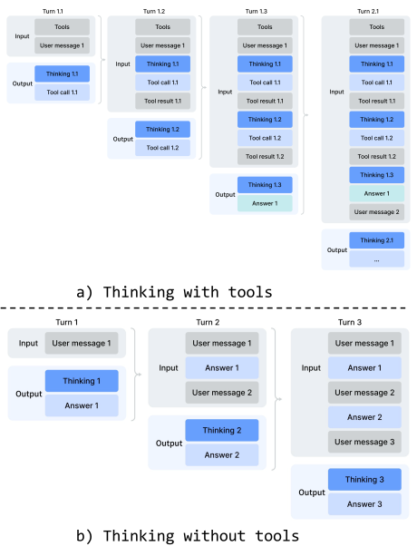
交错思考。
DeepSeek-V3.2 引入了一种上下文管理策略：在工具结果轮次之间保留推理轨迹，但在收到新的用户消息时将其丢弃。 这一策略虽然有效，但在复杂智能体工作流中仍会造成不必要的词元浪费——每个新的用户轮次都会清除此前累积的全部推理内容，迫使模型从头重建问题求解状态。 借助 DeepSeek-V4 系列扩展至 1M 词元的上下文窗口，我们进一步改进这一机制，以充分发挥智能体环境中交错思考的作用：
-
•
工具调用场景。 如图 7(a) 所示，整个对话过程中会完整保留所有推理内容。 DeepSeek-V3.2 会在每个新用户轮次丢弃思考轨迹，而 DeepSeek-V4 系列则跨所有轮次保留完整推理历史，包括跨越用户消息边界。 这使模型能够在长程智能体任务中维持连贯、不断累积的思维链。
-
•
一般对话场景。 如图 7(b) 所示，我们保留原有策略：当新用户消息到来时，丢弃此前轮次的推理内容，以便在持续保留推理轨迹收益有限的场景中保持上下文简洁。
与 DeepSeek-V3.2 一样，通过用户消息模拟工具交互的智能体框架（如 Terminus）可能无法触发工具调用上下文路径，因此可能无法受益于增强的推理持久保留机制。 对于这类架构，我们仍建议使用非思考模型。
| 特殊词元 | 说明 | 格式 |
|---|---|---|
| <|action|> | 判断用户提示需要网页搜索还是可以直接回答。 | ...<|User|>{prompt}<|Assistant|><think><|action|> |
| <|title|> | 在助手首次回复后生成简洁的对话标题。 | ...<|Assistant|>{response}<|end_of_sentence|><|title|> |
| <|query|> | 为用户提示生成搜索查询。 | ...<|User|>{prompt}<|query|> |
| <|authority|> | 对用户提示的来源权威性要求进行分类。 | ...<|User|>{prompt}<|authority|> |
| <|domain|> | 识别用户提示所属领域。 | ...<|User|>{prompt}<|domain|> |
| <|extracted_url|> <|read_url|> | 判断是否需要获取并阅读用户提示中的每个 URL。 | ...<|User|>{prompt}<|extracted_url|>{url}<|read_url|> |
快速指令。
在聊天机器人场景中，生成回复前必须执行若干辅助任务，例如判断是否触发网页搜索、识别意图等。传统上，这些任务由一个独立的小模型处理；由于它无法复用已有 KV 缓存，因此需要重复预填充。为克服这一限制，我们引入快速指令（Quick Instruction）。我们直接在输入序列末尾追加一组专用特殊词元，每个词元对应一项辅助任务。通过直接复用已经计算好的 KV 缓存，该机制完全避免了重复预填充，并允许并行执行某些任务，如生成搜索查询、判断权威性要求和识别领域。因此，这一方法显著缩短了用户感知的首词元延迟（TTFT），同时消除了维护和迭代额外小模型的工程开销。表 5 汇总了支持的快速指令词元。
5.1.2 同策略蒸馏
通过专门微调与强化学习训练多个领域专家后，我们采用多教师同策略蒸馏（OPD；Lu and Lab 2025; Gu et al. 2024）作为将专家能力融合进最终模型的主要技术。 OPD 已成为一种有效的后训练范式，能够将领域专家的知识和能力高效迁移到一个统一模型中。 具体做法是让学生在自己生成的轨迹上，学习教师模型的输出分布。 形式化地，给定由 个专家模型 组成的集合，OPD 目标函数定义为：
| (29) |
在这一表达式中， 表示为每个专家分配的权重，通常根据该专家的相对重要性确定。 计算反向 KL 损失 时，需要从学生 采样训练轨迹，以保持同策略学习。 这一机制确保统一策略 选择性地向与当前任务上下文相关的领域专家学习，例如在数学推理任务中与数学专家对齐，在编程任务中与编程专家对齐。 通过该机制，不同专家权重中的知识经由 logits 级对齐，被整合进统一的参数空间，从而在实践中绕开传统权重合并或混合 RL 技术中常见的性能下降问题。 在这一阶段，我们使用覆盖多个领域的十余个教师模型，蒸馏出一个学生模型。
对于上述 OPD 目标，已有工作通常将全词表 KL 损失简化为每个词元位置上的词元级 KL 估计，并在策略损失计算中以 （sg 表示停止梯度操作）作为逐词元优势估计，来复用 RL 框架。 这种做法虽然节省资源，但会导致梯度估计方差较高，且经常引发训练不稳定。 因此，我们在 OPD 中采用全词表 logit 蒸馏。 在计算反向 KL 损失时保留完整 logit 分布，可以获得更稳定的梯度估计，并确保忠实蒸馏教师的知识。 下一小节介绍使全词表 OPD 能够大规模实施的工程工作。
5.2 后训练基础设施
我们的后训练基础设施建立在为 DeepSeek-V3.2 开发的可扩展框架之上。 具体而言，我们集成了第 3.4 节所述的同一套分布式训练栈，以及前文介绍的用于高效自回归采样的轨迹生成引擎。 在此基础上，本工作引入了以下主要改进。 这些设计使超长上下文 RL 与涉及十余个不同教师模型的 OPD 融合任务能够高效执行，从而显著加快模型发布的迭代周期。
5.2.1 FP4 量化感知训练
为加速推理并减少部署时的内存流量，我们在后训练阶段引入量化感知训练（QAT） (Jacob et al., 2018)，使模型（包括教师模型和参考模型）能够适应量化造成的精度下降。 我们将 FP4（MXFP4）量化 (Rouhani et al., 2023) 应用于两个组件：(1) 占据大量 GPU 显存的 MoE 专家权重 (OpenAI, 2025)；(2) CSA 索引器中的查询—键（QK）路径，该路径的 QK 激活完全以 FP4 进行缓存、加载和矩阵相乘，从而加速长上下文场景中的注意力分数计算。 此外，在这一 QAT 过程中，我们进一步将索引分数 从 FP32 量化为 BF16。 这一优化将 top-k 选择器加速了 2，同时保持了 99.7% 的 KV 条目召回率。
对于 MoE 专家权重，按照 QAT 的常见做法，先将优化器维护的 FP32 主权重量化为 FP4，再反量化回 FP8 进行计算。 值得强调的是，我们从 FP4 到 FP8 的反量化是无损的。 这是因为 FP8（E4M3）比 FP4（E2M1）多 2 个指数位，具有更大的动态范围。 因此，只要每个 FP8 量化块（ 的块）内部 FP4 子块（ 的块）的最大与最小缩放因子之比不超过某个阈值，细粒度缩放信息就能完全被 FP8 扩展的动态范围吸收。 我们通过实证确认，当前权重满足这一条件。 这样，整个 QAT 流程无需任何修改即可完全复用现有 FP8 训练框架。 在反向传播中，梯度基于与前向传播相同的 FP8 权重计算，并直接传回 FP32 主权重，等价于让直通估计器（STE）穿过量化操作。 这还避免了对转置权重重新量化的需要。
在 RL 训练的推理和轨迹生成阶段，由于不涉及反向传播，我们直接使用原生 FP4 量化权重，而非模拟量化。 这样既能确保采样时的模型行为与线上部署完全一致，也能减少内核的内存加载以获得实际加速，并显著降低内存消耗。 对于 CSA 索引器中的 QK 路径，我们采用类似处理。
5.2.2 面向全词表 OPD 的高效教师调度
我们的框架支持全词表同策略蒸馏（OPD），教师数量实际上不受限，而且每个教师都可能具有万亿级参数。 为此，我们将所有教师权重卸载到集中式分布式存储中，在教师前向传播期间按需加载，并采用类似 ZeRO 的参数分片，以同时缓解 I/O 和 DRAM 压力。 此外，当词表大小为 时，直接为所有教师显式存储 logits 的成本不可承受，即便将其暂存到磁盘也不例外。 我们通过在前向传播期间仅将教师最后一层的隐藏状态缓存到集中式缓冲区来解决这一问题。 训练时，取回这些缓存状态，并通过相应的预测头模块即时重建完整 logits。 这一设计只带来可忽略的重计算开销，却完全规避了显式存储 logits 所带来的内存负担。 为减少教师预测头占用的 GPU 显存，我们在数据分发时按教师索引排列训练样本。 这一安排确保每个不同的教师头在每个小批次中仅加载一次，且任何时刻设备显存中最多只有一个教师头。 所有参数与隐藏状态的加载、卸载操作均在后台异步进行，不阻塞关键路径上的计算。 最后，我们使用专门的 TileLang 内核计算教师与学生 logits 之间的精确 KL 散度，以加速计算并减少动态内存分配。
5.2.3 可抢占且容错的轨迹生成服务
为最大化 GPU 资源利用率，同时允许为高优先级任务快速调配硬件，我们的 GPU 集群采用覆盖整个集群的抢占式任务调度器，任何正在运行的任务都可能随时被抢占。 此外，大规模 GPU 集群中硬件故障十分常见。 因此，我们为 RL/OPD 轨迹生成实现了可抢占且容错的大语言模型生成服务。
具体而言，我们为每个生成请求实现了词元粒度的预写日志（WAL）。 每当请求生成一个新词元，就立即将其追加到该请求的 WAL 中。 发生抢占时，我们暂停推理引擎，并保存未完成请求的 KV 缓存。 恢复时，我们利用持久化的 WAL 和保存的 KV 缓存继续解码。 即便发生致命硬件错误，也可以利用 WAL 中持久化保存的词元重新执行预填充阶段，以重建 KV 缓存。
需要强调的是，从头重新生成未完成的请求在数学上是不正确的，因为这会引入长度偏差。 由于较短响应更可能在中断前完成，只要发生中断就从头重新生成，会使模型更倾向于生成较短序列。 如果推理栈具有批次不变性和确定性，也可以通过让采样器使用的伪随机数生成器保持同一种子来重新生成，从而解决这一正确性问题。 然而，这种方法仍需额外重跑解码阶段，效率远低于我们的词元粒度 WAL 方法。
5.2.4 将 RL 框架扩展至百万词元上下文
我们引入有针对性的优化，以在百万词元序列上高效执行 RL 和 OPD。 在轨迹生成阶段，我们采用第 5.2.3 节详细介绍的可抢占且容错的轨迹生成服务。 在推理与训练阶段，我们将轨迹生成数据格式拆分为轻量元数据和较大的逐词元字段。 数据分发时，可加载全部轨迹生成数据的元数据，以执行全局打乱和打包布局计算。 较大的逐词元字段通过共享内存数据加载器读入，以消除节点内的数据冗余，并以小批次为粒度在使用后立即释放，从而显著减轻 CPU 和 GPU 的内存压力。 驻留设备的小批次数量根据工作负载动态确定，以在计算吞吐量与 I/O 重叠之间实现高效权衡。
5.2.5 面向智能体 AI 的沙箱基础设施
为满足智能体 AI 在后训练和评估期间多样化的执行需求，我们构建了生产级沙箱平台 DeepSeek Elastic Compute（DSec）。 DSec 包含三个 Rust 组件——API 网关（Apiserver）、每台主机上的代理（Edge）以及集群监视器（Watcher）。它们通过自定义 RPC 协议互连，并在 3FS 分布式文件系统 (DeepSeek-AI, 2025c) 之上实现水平扩展。 在生产环境中，单个 DSec 集群管理数十万个并发沙箱实例。
DSec 的设计源于四点观察： (1) 智能体工作负载高度异构，从轻量函数调用到完整的软件工程流水线，各自对操作系统和安全性有不同要求； (2) 环境镜像数量多且体积大，但必须快速加载并支持迭代定制； (3) 高密度部署要求高效利用 CPU 和内存； (4) 沙箱生命周期必须与 GPU 训练调度协调，包括抢占和基于检查点的恢复。 基于这些观察，下文分别阐述 DSec 的四项核心设计。
统一接口背后的四种执行底座。
DSec 对外提供统一的 Python SDK（libdsec），对四种执行底座进行抽象。 Function Call 将无状态调用分发到预热好的容器池，从而消除冷启动开销。 Container 完全兼容 Docker，并利用 EROFS (Gao et al., 2019) 的按需加载实现高效镜像组装。 microVM 基于 Firecracker (Agache et al., 2020) 构建，为安全敏感的高密度部署增加虚拟机级隔离。 fullVM 基于 QEMU (Bellard, 2005) 构建，支持任意客户机操作系统。 四者共享一套 API，包括命令执行、文件传输和 TTY 访问，只需修改一个参数即可切换。
通过分层存储快速加载镜像。
DSec 通过分层、按需加载，在快速启动与庞大且持续增长的环境镜像集合之间取得兼顾。 对于容器，基础镜像和文件系统提交存储为由 3FS 支撑的只读 EROFS 层，并直接挂载到 overlay 的 lowerdir 中。 挂载时，文件元数据保存在本地磁盘上以便快速访问；数据块则按请求从 3FS 获取。 对于 microVM，DSec 使用 overlaybd (Li et al., 2020) 磁盘格式：只读基础层驻留在 3FS 上以供跨实例共享，写入则进入本地写时复制层。 这些快照能够串联，从而支持高效版本管理和毫秒级恢复。
大规模并发下的密度优化。
为使每个集群能够容纳数十万个沙箱，DSec 解决了两类资源瓶颈。 首先，它减少虚拟化环境中重复的页缓存占用，并通过内存回收支持安全的超额分配。 其次，它缓解容器运行时中的自旋锁竞争，从而降低每个沙箱的 CPU 开销，显著提高每台主机的部署密度。
轨迹日志与抢占后的安全恢复。
DSec 为每个沙箱维护一份全局有序的轨迹日志，持久化记录每次命令调用及其结果。 该轨迹有三个用途： (1) 客户端快速前进——训练任务被抢占时，沙箱资源仍予保留；恢复后，DSec 对已完成的命令回放缓存结果，以加快任务恢复，同时避免非幂等操作重复执行导致的错误； (2) 细粒度来源追踪——每次状态变化的来源及其相应结果均可追溯； (3) 确定性回放——任何历史会话都可以根据其轨迹忠实复现。
5.3 标准基准评估
5.3.1 评估设置
知识与推理。
知识与推理数据集包括 MMLU-Pro (Wang et al., 2024b)、GPQA (Rein et al., 2023)、Human Last Exam (Phan et al., 2025)、Simple-QA Verified (Haas et al., 2025)、Chinese-SimpleQA (He et al., 2024)、LiveCodeBench-v6 (Jain et al., 2024)、CodeForces（内部基准）、HMMT 2026 Feb、Apex (Balunović et al., 2025)、Apex Shortlist (Balunović et al., 2025)、IMOAnswerBench (Luong et al., 2025) 和 PutnamBench (Tsoukalas et al., 2024)。
在编程方面，我们在 LiveCodeBench-v6 和内部 Codeforces 基准上评估 DeepSeek-V4 系列。 对于 Codeforces，我们收集了 14 场 Codeforces Division 1 比赛，共包含 114 道题目（2025 年 5 月至 2025 年 11 月）。 Elo 评分按以下方式计算。 对每场比赛，我们为每道题生成 32 个候选解答。 对每道题，独立地从这些解答中无放回采样 10 个，并将其随机排序，形成提交序列。 每次提交均使用领域专家构建的测试套件进行评判。 已解题目的得分遵循 OpenAI（2025）的惩罚方案：模型获得的人类参考分数，是解出同一道题且此前失败尝试次数相同的人类参赛者得分的中位数。 由此可得到每个采样提交序列的比赛总分，再转换为比赛排名，并通过标准 Codeforces 评分系统换算为估计评分。 比赛级期望评分定义为：对每道题 10 次提交的所有可能随机选择和排序，计算上述估计评分的期望。 模型的总体评分，是这 14 场比赛的比赛级期望评分的平均值。
对于推理和知识任务，我们将温度设为 1.0，并为 Non-think、High 和 Max 模式分别设置 8K、128K 和 384K 词元的上下文窗口。 对于数学任务（例如 HMMT、IMOAnswerBench、Apex 和 HLE），我们使用以下模板评估："{question}\nPlease reason step by step, and put your final answer within \boxed{}." 对于 DeepSeek-V4-Pro-Max 的数学任务，我们使用以下模板引导更深入的推理："Solve the following problem. The problem may ask you to prove a statement, or ask for an answer. If finding an answer is required, you should come up with the answer, and your final solution should also be a rigorous proof of that answer being valid.\n\n{question}"。
对于形式化数学任务，我们在 Lean v4.28.0-rc1 (Moura and Ullrich, 2021) 上以智能体方式评估，提供 Lean 编译器和语义策略搜索引擎，并在最大推理强度下允许最多 500 次工具调用。此外，我们还评估了计算量更大的流程：先生成自然语言候选解答，并通过自验证进行筛选(Shao et al., 2025)，再将保留下来的解答作为指引，交给形式化智能体证明相应的 Lean 命题。这一设计利用非形式化推理改善探索，同时通过形式化验证保持严格的正确性。 在两种设置下，只有通过严格验证器 Comparator 检查的提交才计为正确。
K2.6 和 GLM-5.1 的部分条目留空，因为它们的 API 过于繁忙，未能返回我们查询的响应。
1M 词元上下文。
智能体。
智能体数据集包括 Terminal Bench 2.0 (Merrill et al., 2026)、SWE-Verified (OpenAI, 2024b)、SWE Multilingual (Yang et al., 2025)、SWE-Pro (Deng et al., 2025)、BrowseComp (Wei et al., 2025)、MCPAtlas 的公开评估集 (Bandi et al., 2026)、GDPval-AA (Patwardhan et al., 2025; AA, 2025) 和 Tool-Decathlon (Li et al., 2025)。
对于编程智能体任务（SWE-Verified、Terminal-Bench、SWE-Pro、SWE Multilingual），我们使用内部开发的评估框架评估 DeepSeek-V4 系列。 该框架只提供一组最小工具：bash 工具和文件编辑工具。 最大交互步数设为 500，最大上下文长度设为 512K 词元。 对于 Terminal-Bench 2.0，我们认可 GLM-5.1 指出的环境相关问题。 但为保持一致性，我们仍报告在原始 Terminal-Bench 2.0 数据集上的性能。 在 Terminal-Bench 2.0 Verified 子集上，DeepSeek-V4-Pro 的得分约为 72.0。
对于搜索智能体任务（BrowseComp、带工具的 HLE），我们同样使用配备网页搜索和 Python 工具的内部执行框架，最大交互步数设为 500，最大上下文长度设为 512K 词元。 对于 BrowseComp，我们采用与 DeepSeek-V3.2 (DeepSeek-AI, 2025b) 相同的全部丢弃上下文管理策略。
5.3.2 评估结果
| 基准 （指标） | Opus-4.6 | GPT-5.4 | Gemini-3.1-Pro | K2.6 | GLM-5.1 | DS-V4-Pro | ||
| Max | xHigh | High | Thinking | Thinking | Max | |||
| 知识与推理 | MMLU-Pro (EM) | 89.1 | 87.5 | 91.0 | 87.1 | 86.0 | 87.5 | |
| SimpleQA-Verified (Pass@1) | 46.2 | 45.3 | 75.6 | 36.9 | 38.1 | 57.9 | ||
| Chinese-SimpleQA (Pass@1) | 76.4 | 76.8 | 85.9 | 75.9 | 75.0 | 84.4 | ||
| GPQA Diamond (Pass@1) | 91.3 | 93.0 | 94.3 | 90.5 | 86.2 | 90.1 | ||
| HLE (Pass@1) | 40.0 | 39.8 | 44.4 | 36.4 | 34.7 | 37.7 | ||
| LiveCodeBench (Pass@1) | 88.8 | - | 91.7 | 89.6 | - | 93.5 | ||
| Codeforces (Rating) | - | 3168 | 3052 | - | - | 3206 | ||
| HMMT 2026 Feb (Pass@1) | 96.2 | 97.7 | 94.7 | 92.7 | 89.4 | 95.2 | ||
| IMOAnswerBench (Pass@1) | 75.3 | 91.4 | 81.0 | 86.0 | 83.8 | 89.8 | ||
| Apex (Pass@1) | 34.5 | 54.1 | 60.9 | 24.0 | 11.5 | 38.3 | ||
| Apex Shortlist (Pass@1) | 85.9 | 78.1 | 89.1 | 75.5 | 72.4 | 90.2 | ||
| 长上下文 | MRCR 1M (MMR) | 92.9 | - | 76.3 | - | - | 83.5 | |
| CorpusQA 1M (ACC) | 71.7 | - | 53.8 | - | - | 62.0 | ||
| 智能体 | Terminal Bench 2.0 (Acc) | 65.4 | 75.1 | 68.5 | 66.7 | 63.5 | 67.9 | |
| SWE Verified (Resolved) | 80.8 | - | 80.6 | 80.2 | - | 80.6 | ||
| SWE Pro (Resolved) | 57.3 | 57.7 | 54.2 | 58.6 | 58.4 | 55.4 | ||
| SWE Multilingual (Resolved) | 77.5 | - | - | 76.7 | 73.3 | 76.2 | ||
| BrowseComp (Pass@1) | 83.7 | 82.7 | 85.9 | 83.2 | 79.3 | 83.4 | ||
| HLE w/ tools (Pass@1) | 53.1 | 52.0 | 51.6 | 54.0 | 50.4 | 48.2 | ||
| GDPval-AA (Elo) | 1619 | 1674 | 1314 | 1482 | 1535 | 1554 | ||
| MCPAtlas Public(Pass@1) | 73.8 | 67.2 | 69.2 | 66.6 | 71.8 | 73.6 | ||
| Toolathlon (Pass@1) | 47.2 | 54.6 | 48.8 | 50.0 | 40.7 | 51.8 |
| 基准 （指标） | DeepSeek-V4-Flash | DeepSeek-V4-Pro | |||||
| Non-Think | High | Max | Non-Think | High | Max | ||
| 知识与推理 | MMLU-Pro (EM) | 83.0 | 86.4 | 86.2 | 82.9 | 87.1 | 87.5 |
| SimpleQA-Verified (Pass@1) | 23.1 | 28.9 | 34.1 | 45.0 | 46.2 | 57.9 | |
| Chinese-SimpleQA (Pass@1) | 71.5 | 73.2 | 78.9 | 75.8 | 77.7 | 84.4 | |
| GPQA Diamond (Pass@1) | 71.2 | 87.4 | 88.1 | 72.9 | 89.1 | 90.1 | |
| HLE (Pass@1) | 8.1 | 29.4 | 34.8 | 7.7 | 34.5 | 37.7 | |
| LiveCodeBench (Pass@1-COT) | 55.2 | 88.4 | 91.6 | 56.8 | 89.8 | 93.5 | |
| Codeforces (Rating) | - | 2816 | 3052 | - | 2919 | 3206 | |
| HMMT 2026 Feb (Pass@1) | 40.8 | 91.9 | 94.8 | 31.7 | 94.0 | 95.2 | |
| IMOAnswerBench (Pass@1) | 41.9 | 85.1 | 88.4 | 35.3 | 88.0 | 89.8 | |
| Apex (Pass@1) | 1.0 | 19.1 | 33.0 | 0.4 | 27.4 | 38.3 | |
| Apex Shortlist (Pass@1) | 9.3 | 72.1 | 85.7 | 9.2 | 85.5 | 90.2 | |
| 长上下文 | MRCR 1M(MMR) | 37.5 | 76.9 | 78.7 | 44.7 | 83.3 | 83.5 |
| CorpusQA 1M(ACC) | 15.5 | 59.3 | 60.5 | 35.6 | 56.5 | 62.0 | |
| 智能体 | Terminal Bench 2.0 (Acc) | 49.1 | 56.6 | 56.9 | 59.1 | 63.3 | 67.9 |
| SWE Verified (Resolved) | 73.7 | 78.6 | 79.0 | 73.6 | 79.4 | 80.6 | |
| SWE Pro (Resolved) | 49.1 | 52.3 | 52.6 | 52.1 | 54.4 | 55.4 | |
| SWE Multilingual (Resolved) | 69.7 | 70.2 | 73.3 | 69.8 | 74.1 | 76.2 | |
| BrowseComp (Pass@1) | - | 53.5 | 73.2 | - | 80.4 | 83.4 | |
| HLE w/ tools (Pass@1) | - | 40.3 | 45.1 | - | 44.7 | 48.2 | |
| MCPAtlas Public (Pass@1) | 64.0 | 67.4 | 69.0 | 69.4 | 74.2 | 73.6 | |
| GDPval-AA (Elo) | - | - | 1395 | - | - | 1554 | |
| Toolathlon (Pass@1) | 40.7 | 43.5 | 47.8 | 46.3 | 49.0 | 51.8 | |
知识。
在一般世界知识评估中，DeepSeek-V4-Pro 的最高推理强度模式 DeepSeek-V4-Pro-Max 为开源大语言模型树立了新的最佳水平。 SimpleQA-Verified 的结果显示，DeepSeek-V4-Pro-Max 以 20 个绝对百分点的优势显著超越了所有现有开源基线。 尽管取得了这些进步，它目前仍落后于领先的专有模型 Gemini-3.1-Pro。 在教育知识与推理领域，DeepSeek-V4-Pro-Max 在 MMLU-Pro、GPQA 和 HLE 基准上略微优于 Kimi 和 GLM，但仍落后于领先的专有模型。 总体而言，DeepSeek-V4-Pro-Max 是提升开源模型世界知识能力的一个重要进展。
此外，DeepSeek-V4-Flash 与 DeepSeek-V4-Pro 在知识类任务上存在明显性能差距；这符合预期，因为更大的参数量有助于在预训练期间保留更多知识。 值得注意的是，当分配更高的推理强度时，两种模型在知识基准上的结果都会改善。
推理。
DeepSeek-V4-Pro-Max 在各推理基准上超越了此前所有开放模型，并在多项指标上媲美最先进的闭源模型；规模更小的 DeepSeek-V4-Flash-Max 在编程与数学推理任务上，也超越了此前最强的开源模型 K2.6-Thinking。 同时，DeepSeek-V4-Pro 与 DeepSeek-V4-Flash 在编程竞赛中表现出色。根据我们的评估，其性能与 GPT-5.4 相当，这是开放模型首次在该任务上达到闭源模型水平。在 Codeforces 排行榜中，DeepSeek-V4-Pro-Max 当前在人类参赛者中排名第 23。 DeepSeek-V4 在智能体设置和高计算量设置下的形式化数学任务中也均表现强劲。在智能体设置下，它取得了最先进的结果，如图 8 所示，超过 Seed Prover (Chen et al., 2025) 等此前模型。采用计算量更大的流程后，性能进一步提升，超过 Aristotle(Achim et al., 2025) 等系统，并达到该设置下已知的最佳结果。
智能体。
DeepSeek-V4 系列在评估中展现出强大的智能体性能。 在编程智能体任务上，DeepSeek-V4-Pro 的结果与 K2.6 和 GLM-5.1 相当，但这些开放模型都仍落后于对应的闭源模型。 DeepSeek-V4-Flash 在编程任务上弱于 DeepSeek-V4-Pro，尤其是在 Terminal Bench 2.0 上。 其他智能体评估中也观察到了类似趋势。值得注意的是，DeepSeek-V4-Pro 在 MCPAtlas 和 Toolathlon 上表现良好；这两个评估测试集涵盖广泛的工具和 MCP 服务，说明模型具备出色的泛化能力，而非仅在内部框架上表现良好。
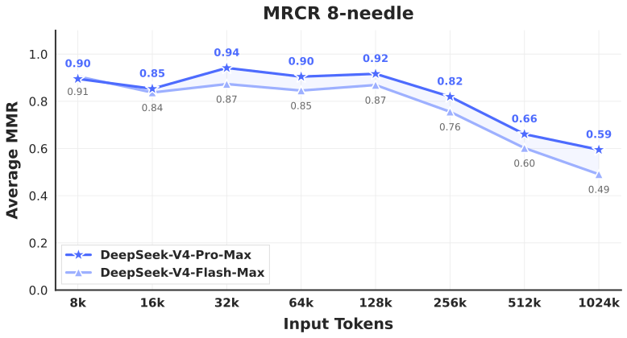
1M 词元上下文。
在衡量上下文内检索能力的 MRCR 任务上，DeepSeek-V4-Pro 超越了 Gemini-3.1-Pro，但仍落后于 Claude Opus 4.6。 如图 9 所示，在 128K 上下文窗口以内，检索性能十分稳定。 虽然超过 128K 后可观察到性能下降，但在 1M 词元时，与专有和开源模型相比，该模型的检索能力仍然非常强。 与 MRCR 不同，CorpusQA 更接近真实场景。 评估结果同样表明，DeepSeek-V4-Pro 优于 Gemini-3.1-Pro。
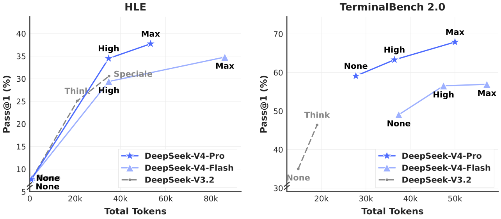
推理强度。
5.4 真实任务中的性能
标准化基准往往难以捕捉多样化真实任务的复杂性，因而测试结果与实际用户体验之间存在差距。 为缩小这一差距，我们开发了专有内部指标，优先衡量真实使用模式，而不局限于传统基准。 这种方法确保我们的优化能够转化为实际收益。 我们的评估框架专门针对 DeepSeek API 和聊天机器人的主要使用场景，使模型性能与实际需求对齐。
5.4.1 中文写作
中文写作是 DeepSeek 的主要使用场景之一。 我们对实用写作和创意写作进行了严格评估。 表 12 展示了 DeepSeek-V4-Pro 与 Gemini-3.1-Pro 在实用写作任务上的成对比较。 这些任务包含日常常见写作请求，提示通常简洁、直接。 我们选择 Gemini-3.1-Pro 作为基线，因为在我们的评估中，它是中文写作表现最好的外部模型。 结果表明，DeepSeek-V4-Pro 以总体胜率 62.7% 对 34.1% 优于基线；主要原因是，在中文写作场景中，Gemini 有时会让自身固有的风格偏好凌驾于用户的明确要求之上。
5.4.2 搜索
搜索增强问答是 DeepSeek 聊天机器人的核心能力。 在 DeepSeek 网页版和应用中，“non-think”模式采用检索增强搜索（RAG），而“thinking”模式采用智能体搜索。
检索增强搜索。
我们在客观问答和主观问答两类任务上，对 DeepSeek-V4-Pro 与 DeepSeek-V3.2 进行了成对比较评估。 如表 11 所示，DeepSeek-V4-Pro 大幅优于 DeepSeek-V3.2，并在两类任务中都呈现出一致优势。 最明显的提升出现在单值搜索与规划和策略任务中，说明 DeepSeek-V4-Pro 擅长定位精确的事实答案，并根据检索上下文综合形成结构化计划。 不过，DeepSeek-V3.2 在比较和推荐任务上仍具有相对竞争力，说明对于需要围绕搜索结果进行平衡、多视角推理的场景，DeepSeek-V4-Pro 仍有提升空间。
智能体搜索。
5.4.3 白领任务
为严格评估模型在复杂企业生产力场景中的实用性，我们构建了一套包含 30 项高级中文专业任务的综合任务集。 这些工作流刻意覆盖高层次认知需求，包括深入信息分析、综合文档生成和精细文档编辑，横跨 13 个关键行业，例如金融、教育、法律和技术。 评估在配备 Bash 和网页搜索等基础工具的内部智能体执行框架中进行。
鉴于这些任务具有开放性，自动化指标通常难以捕捉高质量响应的细微差别。 因此，我们通过人工评估比较 DeepSeek-V4-Pro-Max 与 Opus-4.6-Max 的表现。 标注者对模型输出进行盲评，涵盖以下四个维度：
-
•
任务完成： 是否成功解决核心问题。
-
•
指令遵循： 是否遵守具体约束和指示。
-
•
内容质量： 事实准确性、逻辑连贯性与专业语气。
-
•
格式美观： 版面可读性与视觉呈现。
如图 12 所示，DeepSeek-V4-Pro-Max 在多样化中文白领任务上优于 Opus-4.6-Max，不败率达到 63%，且在分析、生成和编辑任务上均呈现一致优势。 图 12 展示的各维度详细得分表明，模型的主要优势在于任务完成和内容质量。 具体而言，DeepSeek-V4-Pro-Max 经常主动提供补充见解和自验证步骤，以预判用户的隐含意图。 它也擅长长篇生成，能够给出深入、连贯的叙述，而不是依赖 Opus-4.6-Max 经常生成的过于简单的项目符号列表。 此外，模型严格遵守正式专业写作规范，例如标准化中文分级编号。 但在指令遵循方面，它偶尔会忽略具体格式约束，因此略逊于 Opus。 此外，模型不太擅长将大量输入文本压缩成简明摘要。 最后，在演示文稿的整体视觉设计方面，其格式美观仍有较大的提升空间。 图 13、14 和 15 展示了几个测试案例；由于部分输出篇幅较长，图中仅展示了部分页面。
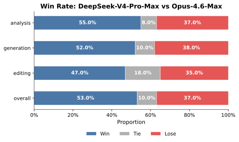
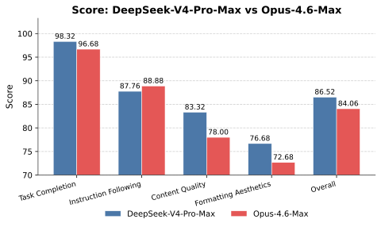
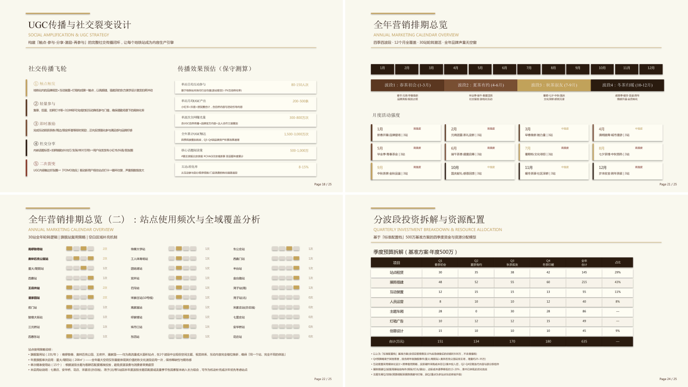
5.4.4 编程智能体
为评估编程智能体能力，我们从真实内部研发工作负载中整理任务。 我们从 50+ 位内部工程师处收集了 200 项具有挑战性的任务， 涵盖功能开发、缺陷修复、重构与诊断， 涉及 PyTorch、CUDA、Rust 和 C++ 等多种技术栈。 每项任务都配有原始代码仓库、相应执行环境与人工标注的评分细则；经过严格质量筛选，最终保留 30 项任务作为评估集。 如表 8 所示，DeepSeek-V4-Pro 显著优于 Claude Sonnet 4.5，并接近 Claude Opus 4.5 的水平。
| Model | Haiku 4.5 | Sonnet 4.5 | DeepSeek-V4-Pro-Max | Opus 4.5 | Opus 4.5 Thinking | Opus 4.6 Thinking |
| 通过率（%） | 13 | 47 | 67 | 70 | 73 | 80 |
我们调查了 DeepSeek 开发者与研究人员（），这些受访者都曾在日常工作中使用 DeepSeek-V4-Pro 进行智能体编程。对于“与其他前沿模型相比，DeepSeek-V4-Pro 是否已能够成为你的默认和主要编程模型”这一问题，52% 回答“是”，39% 倾向于“是”，不足 9% 回答“否”。 受访者认为，DeepSeek-V4-Pro 在大多数任务上能够给出令人满意的结果，但也指出它会犯简单错误、误解模糊提示，并偶尔过度思考。
6 结论、局限与未来方向
在本工作中，我们推出 DeepSeek-V4 系列的预览版本，面向能够突破超长上下文处理效率壁垒的下一代大语言模型。 通过采用整合 CSA 与 HCA 的混合注意力架构，DeepSeek-V4 系列实现了长序列处理效率的巨大跃升。 这些架构创新与广泛的基础设施优化相结合，实现了对百万词元上下文的高效原生支持，并为未来的测试时扩展、长程任务和在线学习等新兴范式奠定了必要基础。 评估结果表明，DeepSeek-V4-Pro 的最高推理强度模式 DeepSeek-V4-Pro-Max 重新定义了开放模型的最先进水平。 它在知识基准上显著超过此前的开源模型，取得了接近前沿专有模型的出色推理性能，并具备有竞争力的智能体能力。 与此同时，DeepSeek-V4-Flash-Max 在保持高性价比架构的同时，实现了与领先闭源模型相当的推理性能。 我们认为，DeepSeek-V4 系列为开放模型开启了百万长度上下文的新阶段，并为更高的效率、规模和智能水平铺平了道路。
为追求极致的长上下文效率，DeepSeek-V4 系列采用了大胆的架构设计。 为了尽量降低风险，我们保留了许多经过初步验证的组件和技巧；这些设计虽然有效，却也使架构相对复杂。 在未来迭代中，我们将开展更全面、更具原理性的研究，提炼出架构中最核心的设计，在不牺牲性能的前提下使其更加简洁优雅。 同时，尽管预先路由和 SwiGLU 截断已被证明能够有效缓解训练不稳定性，但对其背后原理的理解仍不充分。 我们将积极研究训练稳定性的基础问题，加强内部指标监控，力求以更有原理依据、更可预测的方法实现稳定的大规模训练。 此外，除 MoE 和稀疏注意力架构外，我们还将积极探索新维度上的模型稀疏性，例如更稀疏的嵌入模块 (Cheng et al., 2026)，以在不损害能力的情况下进一步提高计算和内存效率。 我们也将持续研究低延迟架构和系统技术，使长上下文部署与交互更加灵敏。 此外，我们认识到长程、多轮智能体任务的重要性与实际价值，将继续朝这一方向迭代探索。 我们也正在为模型引入多模态能力。 最后，我们致力于开发更好的数据整理与合成策略，在日益广泛的场景和任务中持续增强模型的智能、稳健性和实际可用性。
参考文献
- GDPval-aa leaderboard. External Links: Link Cited by: §5.3.1.
- Aristotle: imo-level automated theorem proving. arXiv preprint arXiv:2510.01346. Cited by: §5.3.2.
- Firecracker: lightweight virtualization for serverless applications. In Proceedings of the 17th Usenix Conference on Networked Systems Design and Implementation, NSDI’20, USA, pp. 419–434. External Links: ISBN 9781939133137 Cited by: §5.2.5.
- FlashMoE: fast distributed moe in a single kernel. Advances in Neural Information Processing Systems. External Links: Link Cited by: §3.1.
- GQA: training generalized multi-query transformer models from multi-head checkpoints. arXiv preprint arXiv:2305.13245. Cited by: §2.3.4.
- LeanExplore: A search engine for Lean 4 declarations External Links: Link Cited by: Figure 8.
- Kimi K2: open agentic intelligence. CoRR abs/2507.20534. External Links: Link Cited by: §1.
- Longbench v2: towards deeper understanding and reasoning on realistic long-context multitasks. In Proceedings of the 63rd Annual Meeting of the Association for Computational Linguistics (Volume 1: Long Papers), pp. 3639–3664. Cited by: §4.3.1.
- MathArena: evaluating llms on uncontaminated math competitions. Proceedings of the Neural Information Processing Systems Track on Datasets and Benchmark. Cited by: §5.3.1.
- MCP-atlas: a large-scale benchmark for tool-use competency with real mcp servers. arXiv preprint arXiv:2602.00933. Cited by: §5.3.1.
- QEMU, a fast and portable dynamic translator. In Proceedings of the Annual Conference on USENIX Annual Technical Conference, ATEC ’05, USA, pp. 41. Cited by: §5.2.5.
- Neural combinatorial optimization with reinforcement learning. External Links: Link Cited by: §4.2.3.
- Seed-prover 1.5: mastering undergraduate-level theorem proving via learning from experience. External Links: 2512.17260, Link Cited by: §5.3.2.
- Evaluating large language models trained on code. CoRR abs/2107.03374. External Links: Link, 2107.03374 Cited by: §4.3.1.
- TVM: an automated End-to-End optimizing compiler for deep learning. In 13th USENIX Symposium on Operating Systems Design and Implementation (OSDI 18), Carlsbad, CA, pp. 578–594. External Links: ISBN 978-1-939133-08-3, Link Cited by: §3.2.
- The facts leaderboard: a comprehensive benchmark for large language model factuality. arXiv preprint arXiv:2512.10791. Cited by: §4.3.1.
- Conditional memory via scalable lookup: A new axis of sparsity for large language models. CoRR abs/2601.07372. External Links: Link, Document, 2601.07372 Cited by: §6.
- Training verifiers to solve math word problems. arXiv preprint arXiv:2110.14168. Cited by: §4.3.1.
- DeepSeekMoE: towards ultimate expert specialization in mixture-of-experts language models. CoRR abs/2401.06066. External Links: Link Cited by: §1, §2.1, §2.
- Flash-decoding for long-context inference. External Links: Link Cited by: 1st item.
- Z3: an efficient smt solver. In Proceedings of the Theory and Practice of Software, 14th International Conference on Tools and Algorithms for the Construction and Analysis of Systems, TACAS’08/ETAPS’08, Berlin, Heidelberg, pp. 337–340. External Links: ISBN 3540787992 Cited by: §3.2.
- DeepSeek-coder-v2: breaking the barrier of closed-source models in code intelligence. CoRR abs/2406.11931. External Links: Link Cited by: §4.1.
- DeepSeek-v2: A strong, economical, and efficient mixture-of-experts language model. CoRR abs/2405.04434. External Links: Link Cited by: §2.1.
- DeepSeek-v3 technical report. CoRR abs/2412.19437. External Links: Link Cited by: §1, §1, §2.1, §2, §3.4, §4.1.
- DeepSeek-r1 incentivizes reasoning in llms through reinforcement learning. Nat. 645 (8081), pp. 633–638. External Links: Link Cited by: §1, §1, §5.1.1.
- DeepSeek-v3.2: pushing the frontier of open large language models. External Links: 2512.02556, Link Cited by: §1, §2.3.4, §2.3, §5.1.1, §5.3.1.
- Fire-flyer file system. External Links: Link Cited by: §5.2.5.
- SWE-bench pro: can ai agents solve long-horizon software engineering tasks?. External Links: 2509.16941, Link Cited by: §5.3.1.
- Fewer truncations improve language modeling. arXiv preprint arXiv:2404.10830. Cited by: §4.1.
- Hymba: a hybrid-head architecture for small language models. In The Thirteenth International Conference on Learning Representations, External Links: Link Cited by: §3.5.1.
- Supergpqa: scaling llm evaluation across 285 graduate disciplines. arXiv preprint arXiv:2502.14739. Cited by: §4.3.1.
- DROP: A reading comprehension benchmark requiring discrete reasoning over paragraphs. In Proceedings of the 2019 Conference of the North American Chapter of the Association for Computational Linguistics: Human Language Technologies, NAACL-HLT 2019, Minneapolis, MN, USA, June 2-7, 2019, Volume 1 (Long and Short Papers), J. Burstein, C. Doran, and T. Solorio (Eds.), pp. 2368–2378. External Links: Link, Document Cited by: §4.3.1.
- EROFS: a compression-friendly readonly file system for resource-scarce devices. In Proceedings of the 2019 USENIX Conference on Usenix Annual Technical Conference, USENIX ATC ’19, USA, pp. 149–162. External Links: ISBN 9781939133038 Cited by: §5.2.5.
- Are we done with mmlu?. CoRR abs/2406.04127. External Links: Link Cited by: §4.3.1.
- Better & faster large language models via multi-token prediction. In Forty-first International Conference on Machine Learning, ICML 2024, Vienna, Austria, July 21-27, 2024, External Links: Link Cited by: §2.
- MiniLLM: knowledge distillation of large language models. In The Twelfth International Conference on Learning Representations, Cited by: §1, §5.1.2, §5.1.
- Simpleqa verified: a reliable factuality benchmark to measure parametric knowledge. arXiv preprint arXiv:2509.07968. Cited by: §4.3.1, §5.3.1.
- Chinese simpleqa: a chinese factuality evaluation for large language models. arXiv preprint arXiv:2411.07140. Cited by: 1st item, §5.3.1.
- Measuring massive multitask language understanding. arXiv preprint arXiv:2009.03300. Cited by: §4.3.1.
- Measuring mathematical problem solving with the math dataset. arXiv preprint arXiv:2103.03874. Cited by: §4.3.1.
- C-Eval: a multi-level multi-discipline chinese evaluation suite for foundation models. arXiv preprint arXiv:2305.08322. Cited by: §4.3.1.
- MultiLoKo: a multilingual local knowledge benchmark for llms spanning 31 languages. CoRR abs/2504.10356. External Links: Link, Document Cited by: §4.3.1.
- Quantization and training of neural networks for efficient integer-arithmetic-only inference. In Proceedings of the IEEE Conference on Computer Vision and Pattern Recognition (CVPR), Cited by: §5.2.1.
- LiveCodeBench: holistic and contamination free evaluation of large language models for code. arXiv preprint arXiv:2403.07974. Cited by: §5.3.1.
- Muon: an optimizer for hidden layers in neural networks. Cited on, pp. 10. Cited by: §1, §2.4, §2.4, §2, §4.2.2.
- TriviaQA: a large scale distantly supervised challenge dataset for reading comprehension. In Proceedings of the 55th Annual Meeting of the Association for Computational Linguistics (Volume 1: Long Papers), R. Barzilay and M. Kan (Eds.), Vancouver, Canada, pp. 1601–1611. External Links: Link, Document Cited by: §4.3.1.
- CMMLU: measuring massive multitask language understanding in Chinese. arXiv preprint arXiv:2306.09212. Cited by: §4.3.1.
- DADI: Block-Level image service for agile and elastic application deployment. In 2020 USENIX Annual Technical Conference (USENIX ATC 20), pp. 727–740. External Links: ISBN 978-1-939133-14-4, Link Cited by: §5.2.5.
- The tool decathlon: benchmarking language agents for diverse, realistic, and long-horizon task execution. arXiv preprint arXiv:2510.25726. Cited by: §5.3.1.
- EAGLE: speculative sampling requires rethinking feature uncertainty. In Forty-first International Conference on Machine Learning, ICML 2024, Vienna, Austria, July 21-27, 2024, External Links: Link Cited by: §2.
- Muon is scalable for LLM training. CoRR abs/2502.16982. External Links: Link Cited by: §1, §2.4, §2.4, §2.4, §2, §4.2.2.
- Decoupled weight decay regularization. arXiv preprint arXiv:1711.05101. Cited by: §2.4, §4.2.2.
- On-policy distillation. Thinking Machines Lab: Connectionism. Note: https://thinkingmachines.ai/blog/on-policy-distillation External Links: Document Cited by: §1, §5.1.2, §5.1.
- CorpusQA: a 10 million token benchmark for corpus-level analysis and reasoning. arXiv preprint arXiv:2601.14952. Cited by: §5.3.1.
- Towards robust mathematical reasoning. In Proceedings of the 2025 Conference on Empirical Methods in Natural Language Processing, External Links: Link Cited by: §5.3.1.
- Terminal-bench: benchmarking agents on hard, realistic tasks in command line interfaces. arXiv preprint arXiv:2601.11868. Cited by: §5.3.1.
- Meet minimax-m2. External Links: Link Cited by: §1.
- The lean 4 theorem prover and programming language. In International Conference on Automated Deduction, pp. 625–635. Cited by: §5.3.1.
- A method of solving a convex programming problem with convergence rate . Soviet Mathematics Doklady 27, pp. 372–376. Cited by: §2.4.
- CuBLAS documentation. Note: Version 12.4. Accessed: 2024-09-16 External Links: Link Cited by: 2nd item.
- Introducing SimpleQA. External Links: Link Cited by: 1st item.
- Introducing SWE-bench verified we’re releasing a human-validated subset of swe-bench that more. External Links: Link Cited by: §5.3.1.
- Learning to reason with llms. External Links: Link Cited by: §1.
- Multilingual massive multitask language understanding (mmmlu). External Links: Link Cited by: §4.3.1.
- OpenAI mrcr: long context multiple needle in a haystack benchmark. External Links: Link Cited by: §5.3.1.
- Gpt-oss-120b & gpt-oss-20b model card. CoRR abs/2508.10925. External Links: Link, Document Cited by: §2.3.3, §4.2.3, §5.2.1.
- Stream-k: work-centric parallel decomposition for dense matrix-matrix multiplication on the gpu. In Proceedings of the 28th ACM SIGPLAN Annual Symposium on Principles and Practice of Parallel Programming, pp. 429–431. Cited by: 2nd item, 3rd item.
- Gdpval: evaluating ai model performance on real-world economically valuable tasks. arXiv preprint arXiv:2510.04374. Cited by: §5.3.1.
- Humanity’s last exam. arXiv preprint arXiv:2501.14249. Cited by: 1st item, §5.3.1.
- ProphetNet: predicting future n-gram for sequence-to-sequence pre-training. In Findings of the Association for Computational Linguistics: EMNLP 2020, Online Event, 16-20 November 2020, T. Cohn, Y. He, and Y. Liu (Eds.), Findings of ACL, Vol. EMNLP 2020, pp. 2401–2410. External Links: Link Cited by: §2.
- Qwen3 technical report. CoRR abs/2505.09388. External Links: Link, Document Cited by: §1.
- Zero: memory optimizations toward training trillion parameter models. In SC20: International Conference for High Performance Computing, Networking, Storage and Analysis, pp. 1–16. Cited by: §3.4.1.
- Torch.fx: practical program capture and transformation for deep learning in python. External Links: 2112.08429, Link Cited by: §3.4.4.
- GPQA: a graduate-level google-proof q&a benchmark. arXiv preprint arXiv:2311.12022. Cited by: 1st item, §5.3.1.
- Gemma 2: improving open language models at a practical size. arXiv preprint arXiv:2408.00118. Cited by: §4.2.3.
- Hash layers for large sparse models. In Advances in Neural Information Processing Systems 34: Annual Conference on Neural Information Processing Systems 2021, NeurIPS 2021, December 6-14, 2021, virtual, M. Ranzato, A. Beygelzimer, Y. N. Dauphin, P. Liang, and J. W. Vaughan (Eds.), pp. 17555–17566. External Links: Link Cited by: §2.1.
- Microscaling data formats for deep learning. External Links: 2310.10537 Cited by: §5.2.1.
- WinoGrande: an adversarial winograd schema challenge at scale. External Links: 1907.10641 Cited by: §4.3.1.
- DeepSeekMath-v2: towards self-verifiable mathematical reasoning. External Links: 2511.22570, Link Cited by: §5.3.1.
- Fast transformer decoding: one write-head is all you need. CoRR abs/1911.02150. External Links: Link Cited by: §2.3.1.
- Glu variants improve transformer. arXiv preprint arXiv:2002.05202. Cited by: §3.4.1.
- Language models are multilingual chain-of-thought reasoners. In The Eleventh International Conference on Learning Representations, ICLR 2023, Kigali, Rwanda, May 1-5, 2023, External Links: Link Cited by: §4.3.1.
- Roformer: enhanced transformer with rotary position embedding. Neurocomputing 568, pp. 127063. Cited by: §2.3.3.
- Challenging big-bench tasks and whether chain-of-thought can solve them. arXiv preprint arXiv:2210.09261. Cited by: §4.3.1.
- PutnamBench: evaluating neural theorem-provers on the putnam mathematical competition. External Links: 2407.11214, Link Cited by: Figure 8, §5.3.1.
- Attention is all you need. Advances in neural information processing systems 30. Cited by: §1, §2.
- Auxiliary-loss-free load balancing strategy for mixture-of-experts. CoRR abs/2408.15664. External Links: Link Cited by: §2.1.
- TileLang: bridge programmability and performance in modern neural kernels. In The Fourteenth International Conference on Learning Representations, Cited by: §1, §3.2.
- MMLU-pro: A more robust and challenging multi-task language understanding benchmark. CoRR abs/2406.01574. External Links: Link Cited by: 1st item, §4.3.1, §5.3.1.
- Browsecomp: a simple yet challenging benchmark for browsing agents. arXiv preprint arXiv:2504.12516. Cited by: §5.3.1.
- CMATH: can your language model pass chinese elementary school math test?. External Links: 2306.16636 Cited by: §4.3.1.
- Efficient streaming language models with attention sinks. In The Twelfth International Conference on Learning Representations, ICLR 2024, Vienna, Austria, May 7-11, 2024, External Links: Link Cited by: §2.3.3.
- MHC: manifold-constrained hyper-connections. External Links: 2512.24880, Link Cited by: §1, §2.2, §2, §3.4.2.
- CLUE: A chinese language understanding evaluation benchmark. In Proceedings of the 28th International Conference on Computational Linguistics, COLING 2020, Barcelona, Spain (Online), December 8-13, 2020, D. Scott, N. Bel, and C. Zong (Eds.), pp. 4762–4772. External Links: Link, Document Cited by: §4.3.1.
- SWE-smith: scaling data for software engineering agents. External Links: 2504.21798, Link Cited by: §5.3.1.
- HellaSwag: can a machine really finish your sentence?. In Proceedings of the 57th Conference of the Association for Computational Linguistics, ACL 2019, Florence, Italy, July 28- August 2, 2019, Volume 1: Long Papers, A. Korhonen, D. R. Traum, and L. Màrquez (Eds.), pp. 4791–4800. External Links: Link, Document Cited by: §4.3.1.
- Jenga: effective memory management for serving llm with heterogeneity. In Proceedings of the ACM SIGOPS 31st Symposium on Operating Systems Principles, SOSP ’25, New York, NY, USA, pp. 446–461. External Links: ISBN 9798400718700, Link, Document Cited by: §3.5.1.
- Comet: fine-grained computation-communication overlapping for mixture-of-experts. External Links: 2502.19811, Link Cited by: Figure 5, §3.1.
- DeepGEMM: clean and efficient fp8 gemm kernels with fine-grained scaling. GitHub. Note: https://github.com/deepseek-ai/DeepGEMM Cited by: 2nd item.
- AGIEval: A human-centric benchmark for evaluating foundation models. CoRR abs/2304.06364. External Links: Link, Document, 2304.06364 Cited by: §4.3.1.
- Hyper-connections. In The Thirteenth International Conference on Learning Representations, ICLR 2025, Singapore, April 24-28, 2025, External Links: Link Cited by: §2.2.
- How to synthesize text data without model collapse?. arXiv preprint arXiv:2412.14689. Cited by: §4.1.
- BigCodeBench: benchmarking code generation with diverse function calls and complex instructions. In The Thirteenth International Conference on Learning Representations, ICLR 2025, Singapore, April 24-28, 2025, External Links: Link Cited by: §4.3.1.
附录
Appendix A 作者名单与致谢
A.1 作者名单
作者按名字的字母顺序排列。 带 * 标记的姓名表示已离开本团队的成员。
研究与工程： Anyi Xu, Bangcai Lin, Bing Xue, Bingxuan Wang*, Bingzheng Xu, Bochao Wu, Bowei Zhang, Chaofan Lin, Chen Dong, Chengda Lu, Chenggang Zhao, Chengqi Deng, Chenhao Xu, Chenze Shao, Chong Ruan*, Conner Sun, Damai Dai, Daya Guo*, Dejian Yang, Deli Chen, Donghao Li, Erhang Li, Fangyun Lin, Fangzhou Yuan, Feiyu Xia, Fucong Dai, Guangbo Hao, Guanting Chen, Guoai Cao, Guolai Meng, Guowei Li, Han Yu, Han Zhang, Hanwei Xu, Hao Li, Haofen Liang, Haoling Zhang, Haoming Luo, Haoran Wei*, Haotian Yuan, Haowei Zhang*, Haowen Luo, Haoyu Chen, Haozhe Ji, Honghui Ding, Hongxuan Tang, Huanqi Cao, Huazuo Gao, Hui Qu, Hui Zeng, J. Yang, J.Q. Zhu, Jia Yu, Jialiang Huang, Jiasheng Ye, Jiashi Li, Jiaxin Xu, Jiewen Hu, Jin Yan, Jingchang Chen, Jingli Zhou, Jingting Xiang, Jingyang Yuan, Jingyuan Cheng, Jinhua Zhu, Jiping Yu, Joseph Sun, Jun Ran*, Junguang Jiang, Junjie Qiu, Junlong Li*, Junxiao Song, Kai Dong, Kaige Gao, Kang Guan, Kexing Zhou, Kezhao Huang*, Kuai Yu, Lean Wang, Lecong Zhang, Lei Wang, Li Zhang, Liang Zhao, Lihua Guo, Lingxiao Luo, Linwang Ma, Litong Wang, Liyu Cai, Liyue Zhang, Longhao Chen, M.S. Di, M.Y Xu, Max Mei, Mingchuan Zhang, Minghua Zhang, Minghui Tang, Mingxu Zhou, Panpan Huang, Peixin Cong, Peiyi Wang, Qiancheng Wang, Qihao Zhu, Qingyang Li, Qinyu Chen, Qiushi Du, Qiwei Jiang, Rui Tian, Ruifan Xu, Ruijie Lu, Ruiling Xu, Ruiqi Ge, Ruisong Zhang, Ruizhe Pan, Runji Wang, Runqian Chen, Runqiu Yin, Runxin Xu, Ruomeng Shen, Ruoyu Zhang, S.H. Liu, Shanghao Lu, Shangyan Zhou, Shanhuang Chen, Shaofei Cai, Shaoheng Nie, Shaoyuan Chen, Shengding Hu, Shengyu Liu, Shiqiang Hu, Shirong Ma, Shiyu Wang, Shuiping Yu, Shunfeng Zhou, Shuting Pan, Shuying Yu, Songyang Zhou, Tao Ni, Tao Yun, Tian Jin, Tian Pei, Tian Ye, Tianle Lin, Tianran Ji, Tianyi Cui, Tianyuan Yue, Tingting Yu, Tun Wang, W. Zhang, Wangding Zeng, Weilin Zhao, Wen Liu, Wenfeng Liang, Wenjie Pang, Wenjing Luo, Wenjing Yao, Wenjun Gao, Wenkai Yang, Wenlve Huang, Wentao Zhang, Wenting Ma, Xi Gao, Xiang He, Xiangwen Wang, Xiao Bi, Xiaodong Liu, Xiaohan Wang, Xiaokang Chen, Xiaokang Zhang, Xiaotao Nie, Xin Cheng, Xin Liu, Xin Xie, Xingchao Liu, Xingchen Liu, Xingkai Yu, Xingyou Li, Xinyu Yang, Xu Chen, Xuanyu Wang, Xuecheng Su, Xuheng Lin, Xuwei Fu, Y.C. Yan, Y.Q. Wang*, Y.W. Ma, Yanfeng Luo, Yang Zhang, Yanhong Xu, Yanru Ma, Yanwen Huang, Yao Li, Yao Li, Yao Zhao, Yaofeng Sun, Yaohui Wang, Yi Qian, Yi Yu, Yichao Zhang, Yifan Ding, Yifan Shi, Yijia Wu, Yiliang Xiong, Ying He, Ying Zhou, Yingjia Luo, Yinmin Zhong, Yishi Piao, Yisong Wang, Yixiang Zhang, Yixiao Chen, Yixuan Tan, Yixuan Wei, Yiyang Ma, Yiyuan Liu, Yonglun Yang, Yongqiang Guo, Yongtong Wu, Yu Wu, Yuan Cheng, Yuan Ou, Yuanfan Xu, Yuanhao Li, Yuduan Wang, Yuhan Wu, Yuhao Meng, Yuheng Zou, YuKun Li, Yunfan Xiong, Yupeng Chen, Yuqian Cao, Yuqian Wang, Yushun Zhang, Yutong Lin, Yuxian Gu, Yuxiang Luo, Yuxiang You, Yuxuan Liu, Yuxuan Zhou, Yuyang Zhou, Yuzhen Huang, Z.F. Wu, Zehao Wang, Zehua Zhao, Zehui Ren, Zhangli Sha, Zhe Fu, Zhean Xu, Zhenda Xie, Zhengyan Zhang, Zhewen Hao, Zhibin Gou, Zhicheng Ma, Zhigang Yan, Zhihong Shao, Zhixian Huang, Zhixuan Chen, Zhiyu Wu, Zhizhou Ren, Zhuoshu Li, Zhuping Zhang, Zian Xu, Zihao Wang, Zihui Gu, Zijia Zhu, Zilin Li, Zipeng Zhang*, Ziwei Xie, Ziyi Gao, Zizheng Pan, Zongqing Yao.
业务与合规： Chenchen Ling, Chengyu Hou, Dongjie Ji, Fang Wei, Hengqing Zhang, Jia Luo, Jia Song, Jialu Cai, Jian Liang, Jiangting Zhou, Jieyu Yang, Jin Chen, Jingzi Zhou, Junmin Zheng, Leyi Xia, Linyan Zhu, Miaojun Wang, Mingming Li, Minmin Han, Ning Wang, Panpan Wang, Peng Zhang, Ruyi Chen, Shangmian Sun, Shaoqing Wu, W.L. Xiao, Wei An, Wenqing Hou, Xianzu Wang, Xiaowen Sun, Xiaoxiang Wang, Xinyu Zhang, Xueyin Chen, Yao Xu, Yi Shao, Yiling Ma, Ying Tang, Yuehan Yang, Yuer Xu, Yukun Zha, Yuping Lin, Yuting Yan, Zekai Zhang, Zhe Ju, Zheren Gao, Zhongyu Wu, Zihua Qu, Ziyi Wan.
A.2 致谢
我们感谢 Dolly Deng 和其他测试者，就 DeepSeek-V4 系列模型的能力提供了宝贵建议与反馈。
Appendix B 评估细节
| 难度 | 类别 | # | 智能体胜 | RAG 胜 | 平局 | Agent% | RAG% | 平局% |
| 简单 | Objective Q&A (客观问答) | 196 | 110 | 43 | 43 | 56.1 | 21.9 | 21.9 |
| Subjective Q&A (主观问答) | 321 | 198 | 56 | 67 | 61.7 | 17.4 | 20.9 | |
| 困难 | Objective Q&A (客观问答) | 168 | 102 | 33 | 33 | 60.7 | 19.6 | 19.6 |
| Subjective Q&A (主观问答) | 184 | 126 | 27 | 31 | 68.5 | 14.7 | 16.8 | |
| 总计 | 869 | 536 | 159 | 174 | 61.7 | 18.3 | 20.0 | |
| 版本 | 工具调用 | 预填充（词元） | 输出（词元） |
|---|---|---|---|
| V4 智能体搜索 | 16.2 | 13649 | 1526 |
| V4 检索增强搜索 | — | 10453 | 1308 |
| 内部综合评估 | ||||||||
| 类别 | 子类别 | # | V4 胜 | V3.2 胜 | 平局 | V4% | V3.2% | 平局% |
| Objective Q&A (客观问答) | Single-value Search (单值信息查找) | 95 | 36 | 10 | 49 | 37.9 | 10.5 | 51.6 |
| Entity Search (实体信息查找) | 99 | 24 | 7 | 68 | 24.2 | 7.1 | 68.7 | |
| Enumerative Search (枚举型信息查找) | 95 | 19 | 8 | 68 | 20.0 | 8.4 | 71.6 | |
| 小计 | 289 | 79 | 25 | 185 | 27.3 | 8.7 | 64.0 | |
| Subjective Q&A (主观问答) | Causal Analysis (原因分析) | 100 | 28 | 5 | 67 | 28.0 | 5.0 | 67.0 |
| Comparison (对比) | 96 | 28 | 20 | 48 | 29.2 | 20.8 | 50.0 | |
| Advice Seeking (寻求建议) | 92 | 23 | 8 | 61 | 25.0 | 8.7 | 66.3 | |
| Recommendation (推荐) | 95 | 26 | 19 | 50 | 27.4 | 20.0 | 52.6 | |
| Planning & Strategy (攻略计划) | 92 | 32 | 11 | 49 | 34.8 | 12.0 | 53.3 | |
| Opinion & Evaluation (评价看法) | 96 | 30 | 8 | 58 | 31.2 | 8.3 | 60.4 | |
| Trend Analysis (趋势分析) | 96 | 23 | 3 | 70 | 24.0 | 3.1 | 72.9 | |
| 小计 | 667 | 190 | 74 | 403 | 28.5 | 11.1 | 60.4 | |
| 总计 | 956 | 269 | 99 | 588 | 28.1 | 10.4 | 61.5 | |
| 内部综合评估 | ||||||||
| 类别 | 子类别 | # | DS 胜 | Gem 胜 | 平局 | DS% | Gem% | 平局% |
| Business Writing (办公文本) | Report (报告) | 527 | 350 | 162 | 15 | 66.41 | 30.74 | 2.85 |
| Proposal (方案策划) | 291 | 181 | 103 | 7 | 62.20 | 35.40 | 2.41 | |
| Education (教育培训) | 159 | 100 | 56 | 3 | 62.89 | 35.22 | 1.89 | |
| Email & Letter (邮件书信) | 146 | 107 | 37 | 2 | 73.29 | 25.34 | 1.37 | |
| Notice (通知公告) | 72 | 43 | 24 | 5 | 59.72 | 33.33 | 6.94 | |
| Professional (专业文本) | 63 | 34 | 27 | 2 | 53.97 | 42.86 | 3.17 | |
| Recruitment (招聘求职) | 42 | 27 | 15 | 0 | 64.29 | 35.71 | 0.00 | |
| Technical (技术文本) | 29 | 22 | 7 | 0 | 75.86 | 24.14 | 0.00 | |
| Review (介绍评价) | 20 | 15 | 5 | 0 | 75.00 | 25.00 | 0.00 | |
| 小计 | 1349 | 879 | 436 | 34 | 65.16 | 32.32 | 2.52 | |
| Media Writing (媒体文本) | Social Media (社交媒体文案) | 267 | 156 | 101 | 10 | 58.43 | 37.83 | 3.75 |
| Ad Copy (广告商品文案) | 214 | 109 | 98 | 7 | 50.93 | 45.79 | 3.27 | |
| Long-form Content (内容平台长文) | 99 | 71 | 25 | 3 | 71.72 | 25.25 | 3.03 | |
| News Report (新闻报道) | 51 | 27 | 22 | 2 | 52.94 | 43.14 | 3.92 | |
| Advertorial (营销软文) | 17 | 12 | 4 | 1 | 70.59 | 23.53 | 5.88 | |
| Headline (标题) | 11 | 7 | 4 | 0 | 63.64 | 36.36 | 0.00 | |
| Narration Script (口播文案) | 4 | 2 | 1 | 1 | 50.00 | 25.00 | 25.00 | |
| Comment (评论) | 3 | 2 | 1 | 0 | 66.67 | 33.33 | 0.00 | |
| 小计 | 666 | 386 | 256 | 24 | 57.96 | 38.44 | 3.60 | |
| Everyday Writing (生活文本) | Congratulatory (祝贺文本) | 101 | 54 | 41 | 6 | 53.47 | 40.59 | 5.94 |
| Communication (沟通回复) | 100 | 71 | 26 | 3 | 71.00 | 26.00 | 3.00 | |
| Reflection (心得感想) | 90 | 68 | 17 | 5 | 75.56 | 18.89 | 5.56 | |
| Review (介绍评价) | 55 | 44 | 9 | 2 | 80.00 | 16.36 | 3.64 | |
| Comment (评论) | 44 | 34 | 8 | 2 | 77.27 | 18.18 | 4.55 | |
| 小计 | 390 | 271 | 101 | 18 | 69.49 | 25.90 | 4.62 | |
| Oral Writing (口头文本) | Speech (发言稿) | 226 | 135 | 85 | 6 | 59.73 | 37.61 | 2.65 |
| Narration Script (口播文案) | 51 | 25 | 23 | 3 | 49.02 | 45.10 | 5.88 | |
| Sales Script (话术) | 31 | 22 | 6 | 3 | 70.97 | 19.35 | 9.68 | |
| Dialogue (对话文本) | 10 | 4 | 6 | 0 | 40.00 | 60.00 | 0.00 | |
| Congratulatory (祝贺文本) | 1 | 1 | 0 | 0 | 100.00 | 0.00 | 0.00 | |
| 小计 | 319 | 187 | 120 | 12 | 58.62 | 37.62 | 3.76 | |
| Official Document (公文文本) | Administrative Doc (事务文书) | 117 | 60 | 53 | 4 | 51.28 | 45.30 | 3.42 |
| Personal Doc (个人文书) | 73 | 45 | 27 | 1 | 61.64 | 36.99 | 1.37 | |
| Government Doc (行政公文) | 34 | 19 | 14 | 1 | 55.88 | 41.18 | 2.94 | |
| Speech (发言稿) | 3 | 1 | 2 | 0 | 33.33 | 66.67 | 0.00 | |
| Essay Writing (申论写作) | 3 | 1 | 1 | 1 | 33.33 | 33.33 | 33.33 | |
| 小计 | 230 | 126 | 97 | 7 | 54.78 | 42.17 | 3.04 | |
| Academic Writing (学术文本) | Research Paper (学术论文) | 104 | 67 | 32 | 5 | 64.42 | 30.77 | 4.81 |
| Coursework (课程作业) | 90 | 53 | 35 | 2 | 58.89 | 38.89 | 2.22 | |
| Academic Support (学术辅助) | 15 | 11 | 3 | 1 | 73.33 | 20.00 | 6.67 | |
| Science Outreach (专业科普) | 7 | 6 | 1 | 0 | 85.71 | 14.29 | 0.00 | |
| 小计 | 216 | 137 | 71 | 8 | 63.43 | 32.87 | 3.70 | |
| 总计 | 3170 | 1986 | 1081 | 103 | 62.65 | 34.10 | 3.25 | |
| 指令遵循 | 写作质量 | ||||||||||||
|---|---|---|---|---|---|---|---|---|---|---|---|---|---|
| 文体 | # | DS | Gem | 平局 | DS% | Gem% | 平局% | DS | Gem | 平局 | DS% | Gem% | 平局% |
| Fiction (小说故事) | 836 | 504 | 323 | 5 | 60.58 | 38.82 | 0.60 | 672 | 157 | 3 | 80.77 | 18.87 | 0.36 |
| General Fiction (泛小说故事) | 662 | 368 | 290 | 3 | 55.67 | 43.87 | 0.45 | 467 | 194 | 0 | 70.65 | 29.35 | 0.00 |
| Fan Fiction (同人文) | 410 | 253 | 150 | 3 | 62.32 | 36.95 | 0.74 | 338 | 67 | 1 | 83.25 | 16.50 | 0.25 |
| General Fan Fic. (泛同人文) | 202 | 111 | 90 | 1 | 54.95 | 44.55 | 0.50 | 161 | 40 | 1 | 79.70 | 19.80 | 0.50 |
| Narrative (记叙文) | 171 | 115 | 54 | 2 | 67.25 | 31.58 | 1.17 | 141 | 30 | 0 | 82.46 | 17.54 | 0.00 |
| General Prose (泛散文) | 124 | 83 | 40 | 1 | 66.94 | 32.26 | 0.81 | 88 | 36 | 0 | 70.97 | 29.03 | 0.00 |
| Prose (散文) | 112 | 74 | 38 | 0 | 66.07 | 33.93 | 0.00 | 92 | 20 | 0 | 82.14 | 17.86 | 0.00 |
| Writing Style (文笔) | 112 | 81 | 31 | 0 | 72.32 | 27.68 | 0.00 | 86 | 26 | 0 | 76.79 | 23.21 | 0.00 |
| Classical Poetry (古诗文) | 48 | 24 | 24 | 0 | 50.00 | 50.00 | 0.00 | 39 | 9 | 0 | 81.25 | 18.75 | 0.00 |
| Modern Poetry (现代诗) | 43 | 23 | 20 | 0 | 53.49 | 46.51 | 0.00 | 32 | 11 | 0 | 74.42 | 25.58 | 0.00 |
| Lyrics (歌词) | 30 | 8 | 22 | 0 | 26.67 | 73.33 | 0.00 | 16 | 14 | 0 | 53.33 | 46.67 | 0.00 |
| Literary Appreciation (赏析) | 27 | 20 | 7 | 0 | 74.07 | 25.93 | 0.00 | 18 | 9 | 0 | 66.67 | 33.33 | 0.00 |
| General Argument. (泛议论文) | 24 | 15 | 9 | 0 | 62.50 | 37.50 | 0.00 | 17 | 7 | 0 | 70.83 | 29.17 | 0.00 |
| General Narrative (泛记叙文) | 23 | 11 | 12 | 0 | 47.83 | 52.17 | 0.00 | 15 | 8 | 0 | 65.22 | 34.78 | 0.00 |
| General Classical (泛古文诗歌) | 9 | 5 | 4 | 0 | 55.56 | 44.44 | 0.00 | 5 | 4 | 0 | 55.56 | 44.44 | 0.00 |
| Creative Writing (创意写作) | 6 | 2 | 4 | 0 | 33.33 | 66.67 | 0.00 | 4 | 2 | 0 | 66.67 | 33.33 | 0.00 |
| Argumentative (议论文) | 5 | 5 | 0 | 0 | 100.00 | 0.00 | 0.00 | 5 | 0 | 0 | 100.00 | 0.00 | 0.00 |
| General Mod. Poetry (泛现代诗) | 2 | 1 | 1 | 0 | 50.00 | 50.00 | 0.00 | 2 | 0 | 0 | 100.00 | 0.00 | 0.00 |
| 总计 | 2837 | 1703 | 1119 | 15 | 60.03 | 39.44 | 0.53 | 2198 | 634 | 5 | 77.48 | 22.35 | 0.18 |
| 内部综合评估 | |||||||
|---|---|---|---|---|---|---|---|
| 类别 | # | DS | Opus | 平局 | DS% | Opus% | 平局% |
| Complex Inst. Following (复杂指令跟随) | 49 | 23 | 26 | 0 | 46.9% | 53.1% | 0.0% |
| Multi-Turn Writing (多轮写作) | 147 | 67 | 76 | 4 | 45.6% | 51.7% | 2.7% |
| 总计 | 196 | 90 | 102 | 4 | 45.9% | 52.0% | 2.0% |
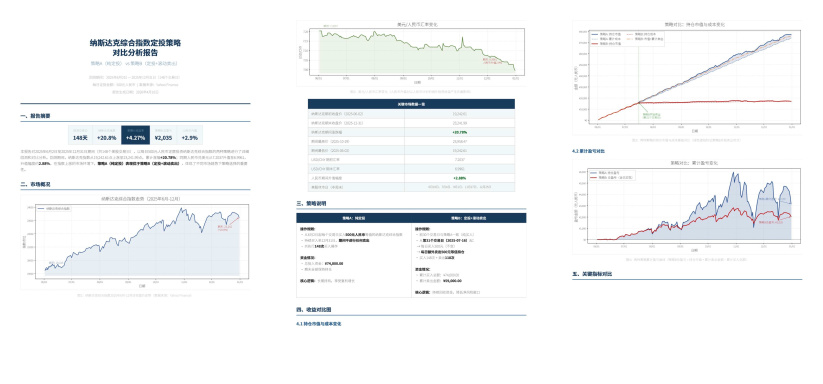
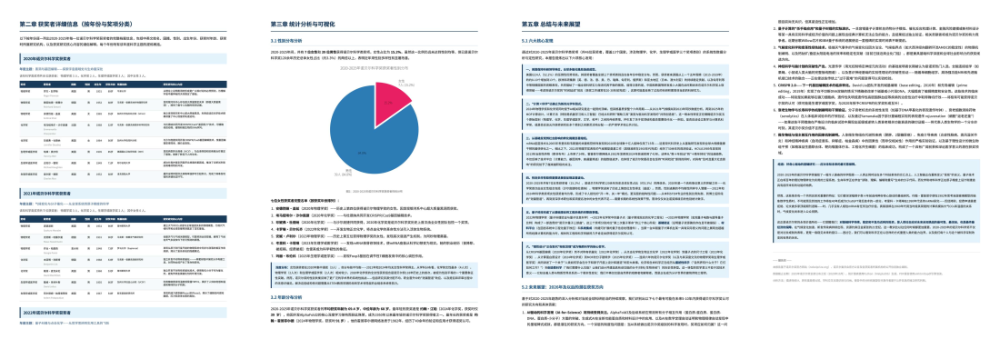
原文来源与许可
本文译自 DeepSeek-AI 的 DeepSeek-V4 技术报告，对应 arXiv 2606.19348v1。已核对 DeepSeek 官方发布版本；英文报告及其关联文档按官方仓库的 MIT 许可提供。中文为本项目译文，原图、作者与参考文献保留原文。
MIT License Copyright (c) 2023 DeepSeek Permission is hereby granted, free of charge, to any person obtaining a copy of this software and associated documentation files (the "Software"), to deal in the Software without restriction, including without limitation the rights to use, copy, modify, merge, publish, distribute, sublicense, and/or sell copies of the Software, and to permit persons to whom the Software is furnished to do so, subject to the following conditions: The above copyright notice and this permission notice shall be included in all copies or substantial portions of the Software. THE SOFTWARE IS PROVIDED "AS IS", WITHOUT WARRANTY OF ANY KIND, EXPRESS OR IMPLIED, INCLUDING BUT NOT LIMITED TO THE WARRANTIES OF MERCHANTABILITY, FITNESS FOR A PARTICULAR PURPOSE AND NONINFRINGEMENT. IN NO EVENT SHALL THE AUTHORS OR COPYRIGHT HOLDERS BE LIABLE FOR ANY CLAIM, DAMAGES OR OTHER LIABILITY, WHETHER IN AN ACTION OF CONTRACT, TORT OR OTHERWISE, ARISING FROM, OUT OF OR IN CONNECTION WITH THE SOFTWARE OR THE USE OR OTHER DEALINGS IN THE SOFTWARE.